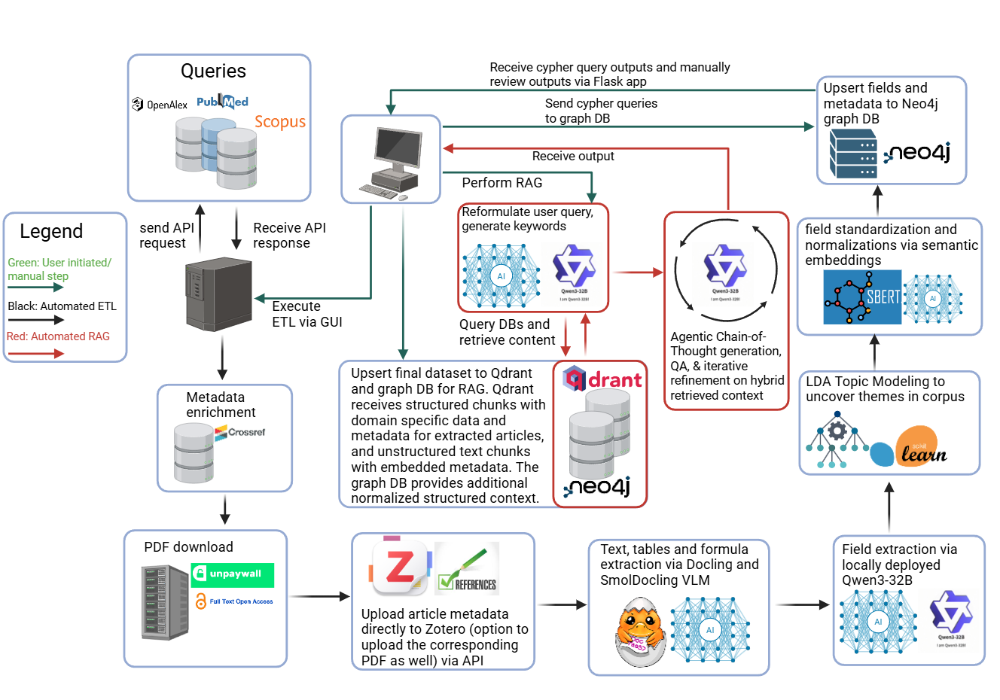
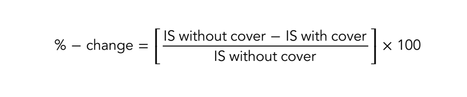

7.1 The ETL Pipeline: From Raw Literature to Structured Knowledge
This chapter will server as the technical report for the ETL+HySemRAG methodology and is a work in progress. This chapter will be updated once the draft is complete to describe all phases and theories of operation of the system.

Figure 7.1: Graphical Abstract
7.1.1 Corpus Size and Variability
The final corpus size in each ETL run is not fixed, rather emerges naturally based on the availability of open-access full-text PDFs via the Unpaywall API. Typically, from an initial candidate pool of approximately 3,400 metadata records retrieved from PubMed, OpenAlex, and Scopus, the number of successfully retrieved full-text documents ranges from around 500 to 1,300. This inherent variability reflects realistic constraints encountered during automated scholarly literature retrieval, specifically the reliance on open-access publications. Importantly, this variability underscores the pipeline’s robustness and adaptability, as subsequent processing stages maintain stable performance metrics (accuracy of data extraction, knowledge graph quality, semantic consistency) regardless of the exact corpus size. This adaptability positions the ETL pipeline as particularly suited to real-world research scenarios where comprehensive subscription-based access may not always be available.
Demonstration Video
Here is a video demonstrating the system’s capabilities:
7.1.2 Stage 1: Multi-Source Data Acquisition and Enrichment
The initial and most foundational stage of the ETL pipeline is the acquisition of a comprehensive, relevant, and clean corpus of scholarly literature. The objective of this phase is to systematically gather article metadata from multiple disparate sources, each with unique strengths, and then intelligently fuse them into a single, deduplicated, and enriched dataset. This process is orchestrated by a series of high-performance Python modules designed for scalability and robustness, ensuring that the subsequent stages of the pipeline operate on a high-quality foundation.
7.1.2.1 Parallelized Metadata Fetching:
To achieve a comprehensive corpus, the system employs a multi-source fetching strategy, simultaneously querying three major scholarly databases: PubMed, for its depth in biomedical and life sciences literature; OpenAlex, for its broad multidisciplinary coverage and rich citation network data; and Elsevier’s Scopus API, for its extensive abstract and citation database, particularly for STEM fields. The GUI allows the user to select any combination of these sources for a given run.
Recognizing that fetching metadata for thousands of articles via sequential API calls would present a significant performance bottleneck, the system was architected for high-throughput, concurrent data retrieval. The implementation is tailored to the specific architecture and rate-limiting policies of each API. For PubMed, the scripts/fast_pubmed.py module first performs a single, efficient esearch call to retrieve up to 10,000 PubMed IDs (PMIDs) matching a given query. Subsequently, it uses a ThreadPoolExecutor to create a pool of worker threads that fetch the full article metadata in parallel batches using efetch, while adhering to NCBI’s polite API usage policy of approximately 3 queries per second. For OpenAlex and Scopus, the system leverages modern asynchronous I/O via the asyncio and aiohttp libraries within the scripts/fast_openalex.py and scripts/etl_elsevier.py modules. This approach allows the system to initiate hundreds of concurrent HTTP requests, managing them efficiently without being blocked by network latency. An asyncio.Semaphore is used as a throttling mechanism to ensure the number of requests per second does not exceed the official rate limits for each API, preventing errors and ensuring reliable access.
7.1.2.2 Data Fusion and Deduplication:
Once the parallel fetching processes are complete, the metadata from each source, now held in separate pandas DataFrames, must be combined into a single, unified dataset. This is handled by the merge_and_deduplicate function within the scripts/etl_utils_refined.py module. The function first concatenates the list of DataFrames into one large, heterogeneous dataset.
The subsequent critical step is deduplication, as the same article may be retrieved from multiple databases. A simple row-based drop would be insufficient. Therefore, the system implements a robust, hierarchical deduplication algorithm. First, it normalizes all Digital Object Identifiers (DOIs) by converting them to a consistent lowercase format and removing whitespace. It then identifies and retains the first occurrence of each unique DOI.
For the remaining records that may lack a DOI, the algorithm performs a secondary deduplication based on a similarly normalized article title. This two-pass strategy ensures that each unique scholarly work is represented by a single, canonical record in the final dataset, preventing data redundancy in all downstream analyses.
7.1.2.3 Metadata Enrichment:
The initial, merged dataset, while comprehensive, may contain records with incomplete information (e.g., a record from PubMed might be missing a PDF link that OpenAlex has). The final step in the acquisition phase is therefore a dedicated enrichment process, orchestrated by scripts/metadata_enrichment.py. This module takes the entire list of unique DOIs from the deduplicated dataset and once again uses an asynchronous approach to concurrently query both the OpenAlex and Crossref APIs for every article.
The results are then intelligently merged back into the main DataFrame. This process is non-destructive; it is designed to backfill missing information rather than overwrite existing data. For instance, an abstract retrieved from Crossref will only be added to a record if that record’s Abstract field is currently empty. Similarly, fields like ItemType or CitationCount are updated only if the existing data is null or a placeholder. This ensures that the final output is the most complete possible version of each record, combining the strengths of all queried databases.
7.1.3 Stage 2: Asynchronous Full-Text PDF Retrieval
Following the creation of a unified and deduplicated list of scholarly articles, the next critical stage of the pipeline is the acquisition of the full-text content for each entry. This is essential for the deep content analysis, entity extraction, and topic modeling performed in subsequent stages. The system orchestrates this process by leveraging the Digital Object Identifier (DOI) of each article to query the Unpaywall API, a service that indexes legally available open-access versions of scholarly publications. Given that this stage involves potentially thousands of network requests, a high-throughput, asynchronous architecture was implemented to manage this I/O-bound task efficiently.
The core retrieval logic, encapsulated in scripts/async_unpaywall.py, is built upon Python’s asyncio and aiohttp libraries. This approach allows the system to initiate and manage thousands of concurrent HTTP requests, preventing the pipeline from being blocked by network latency from any single request. To ensure compliance with Unpaywall’s API usage policies and to maintain system stability, an asyncio.Semaphore is employed as a robust rate-limiting mechanism. The semaphore is initialized with the API_RATE_LIMIT value specified in the project’s configuration file (e.g., 8 queries per second). Each asynchronous worker task must acquire the semaphore before making an API call, guaranteeing that the overall request rate does not exceed the defined limit. The worker function first queries Unpaywall for a given DOI to get a list of potential PDF locations, prioritizing the best_oa_location, and then iteratively attempts to download the file from each candidate URL until a valid PDF is secured.
Code
# In scripts/async_unpaywall.pyasyncdef _worker(row_idx, doi, title, session):"""Return (row_idx, pdf_path|None, status_string).""" api_url =f"https://api.unpaywall.org/v2/{doi}?email={UNPAYWALL_EMAIL}"# _fetch_json is rate-limited by a semaphore data =await _fetch_json(session, api_url)ifnot data:return row_idx, None, "Unpaywall_fail"# Build a list of candidate URLs, prioritizing the best_oa_location candidates = []if (b := data.get("best_oa_location")): candidates.append(b) candidates += data.get("oa_locations", [])for loc in candidates: pdf_url = loc.get("url_for_pdf")ifnot pdf_url:continue# Attempt to download the PDF from the candidate URL pdf_bytes =await _download_pdf(session, pdf_url)if pdf_bytes:# Sanitize filename and save the file safe_name = re.sub(r'[\\/*?:"<>|()]+', '', title)[:100] or doi fname =f"{safe_name}_{row_idx}.pdf" path = os.path.join(PDF_SAVE_FOLDER, fname)withopen(path, "wb") as f: f.write(pdf_bytes)return row_idx, path, "Saved"return row_idx, None, "No_PDF"
Upon successful download, the PDF is saved to a local directory defined in the configuration, and the main DataFrame is updated with the local file path for that article record. Records for which a full-text PDF could not be successfully retrieved are filtered out at the conclusion of this stage. The resulting DataFrame, now containing only articles with corresponding local PDF files, is then passed to the next stage of the pipeline for content extraction.
7.1.4 Stage 3: Bibliographic Management and Citation Rendering
Following the acquisition and deduplication of article metadata and the retrieval of corresponding full-text PDFs, the pipeline proceeds to a crucial data management and enrichment stage. The objective here is twofold: first, to create a permanent, centralized, and queryable library of all processed literature using the Zotero reference management system; and second, to pre-generate authoritative citation metadata for each article. This pre-rendered citation data serves as a verifiable “ground truth” for the downstream Retrieval-Augmented Generation (RAG) agent, ensuring the academic rigor and traceability of the final synthesized output. This entire process is orchestrated by the scripts/fast_zotero_gui.py module.
The integration with Zotero is architected for high-throughput processing. The integrate function within the module receives the DataFrame of articles with valid PDF paths and uses the pyzotero library to communicate with the Zotero API. To maximize efficiency, new items are created in batches of up to 50 articles per API call. Subsequently, the system utilizes a ThreadPoolExecutor to upload the associated PDF files to the newly created Zotero entries in parallel, significantly reducing the time required for this I/O-bound task.
A key technical innovation in this module is the method of citation generation. Rather than relying on slow, repeated API calls to Zotero for formatting each citation, the system leverages the citeproc-py library to perform this rendering locally. This approach uses standard Citation Style Language (CSL) files (e.g., apa.csl, ieee.csl), which are selectable in the GUI, to instantly format both the full bibliographic citation and the corresponding in-text citation for every article. The module also includes a robust fallback mechanism that can query the Zotero API for the citation if the local citeproc rendering encounters an error for a specific entry.
Code
# In scripts/fast_zotero_gui.py# ... inside the integrate function loop ...for idx, zkey in attach.items(): df.at[idx, "ZoteroKey"] = zkey meta = {c: df.at[idx, c] for c in ("Title", "DOI", "Authors", "Date","Journal", "Volume", "Issue", "Pages" )}try:# Attempt local citation rendering first in_text, full = _render_citations(meta, csl_path)exceptExceptionas exc:# If local rendering fails, use the fallback logging.error(f"citeproc rendering failed for row {idx}: {exc}") in_text, full = fallback(zkey, csl_path) ifcallable(fallback) else ("", "") df.at[idx, "InTextCitation"] = in_text or"" df.at[idx, "FullCitation"] = full or""
The impact of this stage on the overall system is critical. The generated ZoteroKey, InTextCitation, and FullCitation generated in this stage are not merely for user reference; they are programmatically injected back into the DataFrame. This enriched data is subsequently passed as part of the context to the downstream Retrieval-Augmented Generation (RAG) agent.
This architectural choice is fundamental to ensuring the factuality and academic rigor of the final synthesized output. The RAG agent is explicitly instructed to populate its findings into a structured JSON object that requires these specific metadata fields for each piece of evidence it presents. By providing this pre-generated, validated citation data directly within the context, the system constrains the Large Language Model. This prevents the LLM from attempting to generate its own citations, a task for which they are notoriously unreliable and prone to hallucination.
Instead of showing the entire internal prompt, the following illustrates the structure of the metadata object that the RAG agent must populate for each observation it makes. The presence of the Zotero-derived fields highlights their essential role in the validation process.
Code
// Example Metadata Schema for a single RAG Observation{"metadata": {"PDF_DocIndex": "148","PDF_ChunkIndex": "0","Struct_DocIndex": "N/A","Struct_ChunkIndex": "N/A","DOI": "10.1016/j.jobe.2021.103722","ZoteroKey": "ABC123DE","InTextCitation": "(Author et al., 2021)","FullCitation": "Author, A., Author, B., & Author, C. (2021). Title of the article. Journal Name, 1(2), 100-110. https://doi.org/10.1016/j.jobe.2021.103722" }}
This architectural choice constrains the Large Language Model, preventing it from generating its own, potentially hallucinated, citations. It ensures that every piece of evidence presented in the final answer is verifiably and accurately linked back to a specific source document managed within the Zotero library, creating a fully traceable and academically sound output.
7.1.5 Stage 4: Content Extraction via Document Layout Analysis
Objective: High-Fidelity Extraction from Scholarly PDFs
A foundational requirement for the ETL pipeline is the ability to accurately and efficiently extract content from thousands of scholarly articles in PDF format. This task is notoriously challenging due to the format’s complex, variable layouts and the need to preserve structural context. The objective for this stage was to move beyond simple text extraction and reliably parse not only the full textual body of each article but also complex embedded elements crucial for scientific analysis, such as tabular data and mathematical formulas formatted in LaTeX.
7.1.5.1 Core Technology and Identified Limitations
To meet this objective, the system leverages IBM’s Docling library as its core document analysis engine, a powerful framework that uses machine learning for sophisticated page layout detection. However, initial implementation and testing revealed several significant limitations with the out-of-the-box library that necessitated a substantial re-engineering effort:
Performance Bottleneck: The framework lacked native support for efficient parallelization, making the processing of thousands of documents a prohibitively time-consuming, single-threaded operation.
Model Inefficiency: TThe original formula recognition model, based on the SamOPTForCausalLM architecture, was found to be excessively resource-intensive, requiring approximately 30 GB of VRAM per instance, constraining the ability to parallelize effectively.
Layout Inaccuracies: The layout detection model frequently produced suboptimal bounding boxes. This manifested in two primary ways:
Formula Fragmentation: Single, multi-line mathematical formulas were often incorrectly segmented into several independent clusters.
Layout Misclassification: Pages containing structured elements like line numbers were often misclassified in their entirety as a single, large TABLE cluster, losing all other semantic information.
Stability Issues: Persistent glyph-parsing errors within the core library caused instability during large-scale processing runs.
To address these significant challenges, a substantial re-engineering of the Docling library was undertaken. The resulting modified codebase, along with testing scripts, sample data, and a validation notebook, has been made publicly available in a dedicated GitHub repository to ensure transparency and allow for independent validation of the enhancements.
To overcome these challenges, the system was transformed into a high-performance, accurate, and efficient processing system through a series of targeted enhancements, primarily orchestrated by scripts/docling_multi_mp_gui.py.
The performance bottleneck was addressed first by designing a custom architecture around Python’s concurrent.futures.ProcessPoolExecutor. A key innovation was the implementation of a custom worker_initializer function that facilitates true parallel processing across multiple GPUs. This initializer uses a locking mechanism to assign each new worker process to a specific GPU from the available hardware pool, effectively converting Docling into a distributed application and dramatically reducing processing time.
The accuracy and inefficiency issues of the formula recognition model were solved by replacing it entirely. The core code_formula_predictor.py was reconfigured to integrate a more efficient and accurate model, “SmolDocling,” which reduced VRAM requirements to ~8GB.
Finally, the layout inaccuracies and stability issues were addressed through direct modifications to the Docling codebase. This included engineering a sophisticated post-processing step in docling/utils/layout_postprocessor.py with rule-based heuristics to merge fragmented formulas and re-classify entire misidentified pages. The persistent glyph errors required low-level debugging by reverse-engineering the compiled C-extension library (pdf_parsers.cpython-312-x86_64-linux-gnu.so) using the Ghidra software reverse engineering suite to diagnose and patch the root cause.
These extensive modifications are reflected in the numerous library files that were changed during development:
7.1.5.3 Initial Challenge: Inaccurate Bounding Boxes and Model Inefficiency
The first major issue identified was the precision of the layout analysis model. The bounding boxes generated for mathematical formulas were often too tight or included extraneous visual artifacts from surrounding text. When these imperfect image snippets were passed to the original formula recognition model (ds4sd/CodeFormula), it frequently failed, resulting in generative feedback loops that produced repetitive, malformed LaTeX output (as exemplified in Figure 7.2, showing a poorly cropped snippet).
Figure 7.2: Bad Formula
Furthermore, the original model, based on the SamOPTForCausalLM architecture, was found to be excessively resource-intensive, requiring approximately 30 GB of VRAM per instance. This made large-scale parallelization across multiple GPUs prohibitively expensive and inefficient.
7.1.5.4 Bounding Box and Image Preprocessing Modifications
The initial attempt to resolve the formula recognition issue focused on improving the quality of the image snippets before they were sent to the model. This involved significant modifications to docling/models/code_formula_model.py.
Dynamic Bounding Box Expansion: Logic was introduced in the prepare_element method to dynamically expand the bounding boxes of detected formulas. Instead of using the original, often tightly-cropped box, the new implementation expands the box by a configurable ratio of the snippet’s height and width. This ensures more visual context is captured as demonstrated in Figure 7.3.

Figure 7.3: Good Formula
Ratio-Based Image Padding: The original *_pad_with_most_frequent_edge_color* function, which used static pixel padding, was entirely replaced. The new version accepts floating-point ratios, allowing it to apply padding that is proportional to the image’s dimensions. This creates a more consistent and contextually appropriate input for the model, regardless of the formula’s original size.
Conditional Image Masking: To further isolate formulas from surrounding text, conditional logic was added to use Docling’s page.get_masked_image() method exclusively for items labeled as DocItemLabel.FORMULA.
7.1.5.5 Implementation of Selective Content Masking
The most critical enhancement was the development of a method to isolate formula elements from distracting adjacent text. When the layout model produced imperfect bounding boxes, snippets would often contain partial lines of text from the main body, confusing the formula recognition model. To solve this, a selective masking capability was engineered directly into the Page class within docling/datamodel/base_models.py.
This was achieved by introducing two new methods, get_masked_image and the internal *_create_masked_image. The _create_masked_image* function operates by first taking a complete, high-resolution image of a document page. It then iterates through all layout clusters previously identified by the layout model. For every cluster that is not labeled as a DocItemLabel.FORMULA, the function programmatically draws a white rectangle over its bounding box.
The result is a new, “masked” image of the page where all non-formula content has been completely obscured, as demonstrated in the comparison between an original page layout (Figure 7.4) and its masked counterpart (Figure 7.5).
Figure 7.4: Unmasked Page
Figure 7.5: Masked Page
When the downstream prepare_element method in code_formula_model.py is called, it now uses this get_masked_image function instead of the standard get_image. By cropping the formula’s bounding box from this pre-masked page, the system guarantees that the final image snippet sent to the SmolDocling model contains only the formula itself, significantly improving the signal-to-noise ratio and preventing recognition errors caused by textual artifacts.
7.1.5.6 Heuristic-Based Merging of Fragmented Layout Clusters
Beyond improving the quality of individual image snippets, a second significant challenge was identified in the output of the base layout analysis model: the fragmentation of single, cohesive document elements into multiple, distinct bounding boxes. This issue was particularly prevalent with complex, multi-line mathematical formulas, which were often incorrectly segmented into several independent FORMULA clusters, as exemplified in Figure 7.6. This fragmentation would lead to the downstream formula recognition model receiving only partial equations, resulting in incomplete and unusable LaTeX output.
Figure 7.6: Fragmented Formulas
To resolve this, a sophisticated post-processing step was engineered within docling/utils/layout_postprocessor.py. The purpose of this step is to apply a series of rule-based heuristics to refine and correct the raw output of the initial layout model before the final document structure is assembled.
Code
def _merge_vertically_adjacent_formulas(self, clusters, vertical_threshold_factor=1.8, horizontal_overlap_threshold=0.7, padding=50, alignment_threshold=20, # pixel-based threshold max_alignment_ratio=0.2, # ratio-based threshold (e.g., 0.2 means 20% mismatch)):""" merge vertically adjacent FORMULA clusters using Union-Find. New logic: 1) Compute a dynamic vertical threshold based on median formula height. 2) Expand bounding boxes horizontally using padding to compute the horizontal overlap. 3) Compute both absolute (pixel) differences and ratio-based alignment. 4) Extract formula numbers from cell texts. If both clusters have numbers and they differ, skip merge. 5) If neither cluster has a formula number, require that the vertical gap is very small (<= 10 px) and that the horizontal overlap is nearly complete (>= 0.9). 6) Otherwise, use the normal criteria based on vertical gap (and derived thresholds). """def compute_alignment_factor(c1, c2):# Compute the average width and return the maximum normalized edge difference. w1 = c1.bbox.r - c1.bbox.l w2 = c2.bbox.r - c2.bbox.l avg_width =max((w1 + w2) /2.0, 1e-6) left_diff =abs(c1.bbox.l - c2.bbox.l) right_diff =abs(c1.bbox.r - c2.bbox.r)returnmax(left_diff / avg_width, right_diff / avg_width)# Only process clusters labelled as FORMULA. formula_clusters = [c for c in clusters if c.label == DocItemLabel.FORMULA] non_formula_clusters = [c for c in clusters if c.label != DocItemLabel.FORMULA]ifnot formula_clusters:return clusters# Sort by the top coordinate. formula_clusters.sort(key=lambda c: c.bbox.t) heights = [c.bbox.b - c.bbox.t for c in formula_clusters] median_height = np.median(heights) if heights else0 vertical_threshold = median_height * vertical_threshold_factor# Build a mapping from cluster id to cluster instance. id_to_cluster = {c.id: c for c in formula_clusters} uf = UnionFind(list(id_to_cluster.keys())) n =len(formula_clusters)for i inrange(n):for j inrange(i +1, n): c1 = formula_clusters[i] c2 = formula_clusters[j]# Compute vertical gap (c2 is assumed to be below c1) vertical_gap = c2.bbox.t - c1.bbox.bif vertical_gap <0or vertical_gap > vertical_threshold:continue# Expand bounding boxes horizontally using the given padding. expanded_bbox_c1 =type(c1.bbox)( l=c1.bbox.l - padding, t=c1.bbox.t, r=c1.bbox.r + padding, b=c1.bbox.b ) expanded_bbox_c2 =type(c2.bbox)( l=c2.bbox.l - padding, t=c2.bbox.t, r=c2.bbox.r + padding, b=c2.bbox.b ) horizontal_overlap =min(expanded_bbox_c1.r, expanded_bbox_c2.r) -max(expanded_bbox_c1.l, expanded_bbox_c2.l) min_width =min(expanded_bbox_c1.r - expanded_bbox_c1.l, expanded_bbox_c2.r - expanded_bbox_c2.l) overlap_ratio = horizontal_overlap / min_width if min_width >0else0 left_diff =abs(c1.bbox.l - c2.bbox.l) right_diff =abs(c1.bbox.r - c2.bbox.r) alignment_factor = compute_alignment_factor(c1, c2)# Extract formula numbers using _extract_formula_number. num1 =self._extract_formula_number(c1) num2 =self._extract_formula_number(c2)# Branch 4) If both have numbers and differ, skipif num1 and num2 and num1 != num2:continue# Normal merging criteria based on vertical gap and alignment.# Pre-calculate default geometry-based thresholdif vertical_gap <= (0.5* vertical_threshold):if left_diff <= alignment_threshold and right_diff <= alignment_threshold: required_overlap = horizontal_overlap_thresholdelse: required_overlap =0.85elif vertical_gap <= vertical_threshold:if alignment_factor <= max_alignment_ratio: required_overlap =0.85else:continueelse:continue# New branch: if no formula number is detected in either cluster,# then enforce a very small vertical gap and nearly complete horizontal overlap.# Branch 2) Both None => require vertical_gap ≤10 and overlap ≥0.9if num1 isNoneand num2 isNone:if vertical_gap >3: # Change this constant if neededcontinue# Require a higher overlap; allow slight relaxation if the normal criterion is higher. required_overlap =max(required_overlap, 0.9)# Branch 3) One number missing => require vertical_gap ≤5 and overlap ≥0.95elif (num1 isNone) != (num2 isNone):# i.e. exactly one side is missing a numberif vertical_gap >12.8:continue required_overlap =max(required_overlap, 0.95)# Branch 1) If both exist and match => use normal geometry (already in required_overlap)# Final merge checkif overlap_ratio >= required_overlap: uf.union(c1.id, c2.id) groups = uf.get_groups() merged_formula_clusters = []for group_ids in groups.values(): group_clusters = [id_to_cluster[g] for g in group_ids] merged_bbox =type(group_clusters[0].bbox)( l=min(c.bbox.l for c in group_clusters), t=min(c.bbox.t for c in group_clusters), r=max(c.bbox.r for c in group_clusters), b=max(c.bbox.b for c in group_clusters) ) combined_cells = []for c in group_clusters: combined_cells.extend(c.cells) merged_cluster = group_clusters[0] merged_cluster.bbox = merged_bbox merged_cluster.cells =self._sort_cells(self._deduplicate_cells(combined_cells)) merged_formula_clusters.append(merged_cluster)return non_formula_clusters + merged_formula_clusters
The core of this enhancement is the new *_merge_vertically_adjacent_formulas* method. This algorithm intelligently identifies and merges clusters that likely belong to the same formula. It operates on a set of heuristics designed to distinguish between separate, adjacent equations and multiple lines of a single equation:
Dynamic Proximity Threshold: Rather than using a fixed pixel distance, the method first calculates the median height of all detected formulas on a page. It then defines a dynamic vertical proximity threshold based on a factor of this median height, allowing it to adapt to documents with different font sizes and line spacing.
Formula Number Extraction: A helper function, _extract_formula_number, uses regular expressions to find equation numbers (e.g., (1), (2a), (A5)) within the text of each formula cluster.
Contextual Merging Logic: The algorithm iterates through pairs of vertically adjacent formula clusters and applies a decision-making process:
If both clusters have distinct formula numbers (e.g., (1) and (2)), they are correctly identified as separate equations and are not merged.
If neither cluster has a formula number, they are only merged if the vertical gap between them is minimal and their horizontal overlap is nearly complete, which is characteristic of multi-line equations without a single encompassing number.
If one cluster has a number and the adjacent one does not, a stricter set of proximity and overlap rules is applied.
Once candidate clusters for merging are identified, a Union-Find data structure is used to efficiently group them. The final step involves creating a new, single bounding box that encompasses all the merged clusters and combining their constituent text cells. This new, unified cluster is then passed to the next stage of the pipeline, ensuring the entire formula is processed as a single unit as demonstrated in Figure 7.7. Additional heuristics, such as the *_filter_tables_containing_page_footer* method, were also added to this module to correct other common layout analysis errors, further improving the overall quality of the parsed document structure.
Figure 7.7: Unfragmented Formulas
7.1.5.7 Misclassification of Page Layouts
This analysis details further enhancements made to the layout post-processing logic to address specific, recurring classification errors observed in certain document types, such as pre-prints or articles with line numbers.
A common failure mode was observed where the layout detection model would misclassify an entire page or large sections of a page as a single, large TABLE cluster. This issue was particularly prevalent in documents that featured line numbers running down the left-hand margin, as seen in Figure 7.8. The presence of this repeating, structured numerical column appeared to mislead the model into perceiving the entire text block as tabular data. This resulted in the loss of all other semantic distinctions for that page (e.g., paragraphs, headers, lists), rendering the content unusable for downstream extraction.
Figure 7.8: Table Missclassification
7.1.5.8 Heuristic-Based Re-classification of Misidentified Clusters
To correct this, a new heuristic-based filtering method, *_filter_tables_containing_page_footer*, was engineered and integrated into the main postprocess pipeline. While the method name suggests a focus on page footers, its logic was designed more broadly to identify and re-classify any cluster that was erroneously labeled as a table-like structure when it was, in fact, the main body text of the page.
Code
# In scripts/docling/utils/layout_postprocessor.pydef _filter_tables_containing_page_footer(self, clusters: List[Cluster], min_area_ratio: float=0.70, min_cells_threshold: int=50, min_density_threshold: float=0.001) -> List[Cluster]:""" Enhanced logic to avoid reclassifying legitimate large tables. """ large_labels = {DocItemLabel.TABLE, DocItemLabel.DOCUMENT_INDEX, DocItemLabel.KEY_VALUE_REGION, DocItemLabel.FORM} page_area =self.page_size.width *self.page_size.height reclassified_count =0for cluster in clusters:if cluster.label in large_labels: cluster_area_ratio = cluster.bbox.area() / page_areaif cluster_area_ratio >= min_area_ratio: all_cells =self._collect_all_cells(cluster) cell_density =len(all_cells) / cluster.bbox.area()# Reclassify if the cluster is large but sparsely populated with text cellsiflen(all_cells) < min_cells_threshold or cell_density < min_density_threshold: cluster.label = DocItemLabel.TEXT reclassified_count +=1return clusters
The algorithm operates on a set of carefully tuned heuristics to distinguish between a legitimate, large table and a misclassified text block:
Target Selection: The function first identifies any cluster labeled as a TABLE (or other large “wrapper” types like FORM) for inspection.
Area Threshold: It only considers clusters that are exceptionally large, occupying a significant portion of the page (e.g., min_area_ratio of 70%). This prevents the algorithm from affecting smaller, legitimate tables.
Cell Count & Density Check: This is the core heuristic. It recursively collects all the individual text cells within the large cluster and calculates two metrics: the absolute number of cells and the “cell density” (number of cells per unit of bounding box area).
Re-classification Logic: If a cluster is very large but contains a low number of text cells or has a very low cell density, it is highly unlikely to be a real table. In such cases, the algorithm re-classifies the cluster’s label from TABLE to TEXT.
By adding this function to the postprocess pipeline, the system can now correctly identify and relabel these large, sparse, misclassified text blocks, preserving the semantic integrity of the page structure as demonstrated by the corrected output in Figure 7.9.
Figure 7.9: Table Correction
7.1.5.9 Pre-emptive Filtering of Page-Level Artifacts
In addition to the post-processing of layout clusters, further enhancements were engineered upstream in the docling/backend/docling_parse_v4_backend.py module to improve the initial quality of the data fed to the layout analysis model. This module serves as a low-level backend that interacts directly with the docling-parse C++ library, which is responsible for the initial extraction of raw text cells and their coordinates from the PDF document. It was observed that certain document formats, particularly pre-prints, often contain page-level artifacts like line numbers in the margins. These structured, non-substantive elements were found to frequently mislead the layout model, leading to catastrophic classification errors where an entire page of text would be misidentified as a single, large TABLE cluster.
To mitigate this failure mode, the primary modification was made to the get_text_cells method within the DoclingParseV4PageBackend class. The original implementation of this method simply transformed the coordinate system of all extracted text cells and returned the complete, unfiltered list. The enhanced version introduces a new helper method, *_is_left_margin_line_number*, which applies a series of geometric heuristics to identify and pre-emptively filter these line-number artifacts before they are passed to the layout model.
The heuristic function determines if a given text cell is a line number by evaluating three specific spatial properties. First, it confirms the cell is located within a narrow vertical band on the far-left of the page, defined by a LEFT_MARGIN_THRESHOLD (e.g., the leftmost 8% of the page width). Second, it verifies that the cell’s bounding box width is less than this MAX_WIDTH_THRESHOLD, characteristic of short numerical strings. Finally, it ensures the cell has a reasonable height via MIN_HEIGHT_THRESHOLD to avoid incorrectly filtering other small page markings like footnote symbols. A cell is only flagged and removed if it satisfies all three conditions. By filtering the cell list with this function, the layout model receives a much cleaner representation of the page’s semantic content, significantly reducing classification errors and preserving the integrity of the document structure for all downstream processing.
Original Implementation (get_text_cells)
Code
def get_text_cells(self) -> Iterable[TextCell]: page_size =self.get_size()# Applies coordinate transformation but returns all cells [tc.to_top_left_origin(page_size.height) for tc inself._dpage.textline_cells]returnself._dpage.textline_cells
Modified Implementation with Heuristic Filtering
Code
def get_text_cells(self) -> Iterable[TextCell]: page_size =self.get_size()for tc inself._dpage.textline_cells: tc.to_top_left_origin(page_size.height)# Filter out cells identified as line numbers by the heuristic filtered_cells = [ cell for cell inself._dpage.textline_cellsifnotself._is_left_margin_line_number(cell, page_size) ]return filtered_cellsdef _is_left_margin_line_number(self, cell: TextCell, page_size: Size) ->bool:""" Identifies if a cell is a line number based on geometric properties. """ LEFT_MARGIN_THRESHOLD =0.08 MIN_HEIGHT_THRESHOLD =5 MAX_WIDTH_THRESHOLD = page_size.width * LEFT_MARGIN_THRESHOLD bbox = cell.rect.to_bounding_box() is_within_left_margin = bbox.l < MAX_WIDTH_THRESHOLD is_small_horizontal = bbox.width < MAX_WIDTH_THRESHOLD is_not_too_short = bbox.height >= MIN_HEIGHT_THRESHOLD # Corrected logicreturn is_within_left_margin and is_small_horizontal and is_not_too_short
7.1.5.10 Refinements to the Underlying Layout Predictor
Complementing the logical post-processing of layout clusters, targeted modifications were also made to the underlying docling_ibm_models/layoutmodel/layout_predictor.py module. This module is responsible for the initial, low-level detection of layout elements on a page image by executing the RTDetrForObjectDetection model. While the primary logic of the model itself was not altered, key refinements were made to its data handling and execution to ensure high-performance and stable operation within the custom parallelized framework.
The most critical modification addresses a performance bottleneck related to hardware utilization. In the predict method, the target_sizes tensor, which is required by the post_process_object_detection function to correctly rescale bounding boxes to the original image dimensions was originally created on the CPU by default.
Code
@torch.inference_mode()def predict(self, orig_img: Union[Image.Image, np.ndarray]) -> Iterable[dict]: results =self._image_processor.post_process_object_detection( outputs, target_sizes=torch.tensor([page_img.size[::-1]]), # Tensor created on CPU by default threshold=self._threshold, ) w, h = page_img.size result = results[0]for score, label_id, box inzip(result["scores"], result["labels"], result["boxes"]):# ...# Manual clamping of coordinates l =min(w, max(0, bbox_float[0])) t =min(h, max(0, bbox_float[1])) r =min(w, max(0, bbox_float[2])) b =min(h, max(0, bbox_float[3]))yield { # ... }
When the model was running on a GPU, this mismatch forced an expensive and unnecessary cross-device data transfer during post-processing. The implementation was corrected to explicitly create this tensor on the same device as the model (device=self._device), eliminating the synchronization penalty and ensuring more efficient CUDA utilization.
Code
# ...@torch.inference_mode()def predict(self, orig_img: Union[Image.Image, np.ndarray]) -> Iterable[dict]:# ...# Explicitly create the tensor on the same device as the model (e.g., CUDA) target_sizes = torch.tensor([[original_height, original_width]], device=self._device) results =self._image_processor.post_process_object_detection( outputs, target_sizes=target_sizes, threshold=self._threshold ) result = results[0]# Directly use the results after converting to NumPy arrays boxes = result["boxes"].cpu().numpy() scores = result["scores"].cpu().numpy() labels = result["labels"].cpu().numpy()for score, label_id, box inzip(scores, labels, boxes):# ...# No more manual clamping l, t, r, b = boxyield { # ... }
Additionally, the code was modernized by removing redundant manual logic for clamping bounding box coordinates. The original implementation manually ensured that the box coordinates did not exceed the page dimensions after being returned by the post-processing function. The refined version removes this step, properly delegating the responsibility for coordinate clamping to the transformers library’s post_process_object_detection function. This change makes the code cleaner, more maintainable, and adheres more closely to the intended use of the library’s API. While subtle, these enhancements to the core predictor were essential for ensuring the stability and high throughput required by the system’s parallel architecture.
7.1.5.11 Final Implementation in the ETL Pipeline
The re-engineered Docling system is integrated as a distinct stage in the ETL pipeline, orchestrated by the do_docling_extraction function.
Code
# In scripts/docling_multi_mp_gui.pydef do_docling_extraction(df: pd.DataFrame, progress_callback=None) -> pd.DataFrame:""" Processes DataFrame rows in parallel using config settings. """global MAX_WORKERS_DOCLING num_records =len(df)# Use the worker count from config, ensuring it's at least 1 max_workers_to_use =max(1, MAX_WORKERS_DOCLING) output_cols = ["FullText", "TablesJson", "EquationsJson", "TokenCount", "Error"]for col in output_cols:if col notin df.columns:if col =="TokenCount": df[col] =0elif col =="Error": df[col] =Noneelse: df[col] =""# Default to empty string for text/JSON string columns futures = {} processed_count =0with ProcessPoolExecutor(max_workers=max_workers_to_use, initializer=worker_initializer) as executor:for idx, row in df.iterrows(): pdf_path = row.get("PDFPath", "")ifnot pdf_path ornot os.path.exists(pdf_path): df.loc[idx, output_cols] = ["PDF_PATH_ERROR", "[]", "[]", 0, "PDF_PATH_ERROR"] processed_count +=1continue future = executor.submit(extract_pdf_with_docling, pdf_path) futures[future] = idx # Map future to DataFrame index# Process results as they completefor future in as_completed(futures): irow = futures[future] # Get the original DataFrame indextry: result = future.result() # Get the dict returned by worker# Update DataFrame using .loc with index 'irow'for col in output_cols: df.loc[irow, col] = result.get(col)exceptExceptionas e: df.loc[irow, output_cols] = ["FUTURE_ERROR", "[]", "[]", 0, f"FutureError: {type(e).__name__}"]return df
This function receives a pandas DataFrame containing paths to the downloaded PDF articles. It distributes the processing of each PDF to the pool of GPU-powered workers. Each worker executes the extract_pdf_with_docling function, which initializes a dedicated DocumentConverter instance configured for its assigned GPU. The worker processes its assigned PDF, extracts the full text (exported as Markdown to preserve structure), and specifically identifies and serializes all tabular data and mathematical formulas into JSON arrays. Upon completion, the structured outputs, FullText, TablesJson, EquationsJson, along with a TokenCount are returned to the main process and integrated back into the corresponding row of the DataFrame. The resulting enriched DataFrame is then saved as a new artifact (output.feather), ready for the subsequent LLM-based field extraction stage.
7.1.6 Stage 5: Structured Field Extraction using Large Language Models
Following the extraction of raw text via document layout analysis, the pipeline proceeds to the structured field extraction stage, orchestrated by the scripts/field_extraction.py module. The objective of this component is to parse the unstructured text from each article and populate a predefined set of structured data fields. This process transforms dense, narrative content into a queryable, machine-readable format suitable for populating the knowledge graph and facilitating systematic analysis.
7.1.6.1 Methodology: Iterative, Context-Aware Extraction with Local LLMs
The system employs a sophisticated extraction strategy centered around a locally deployed Large Language Model (Qwen/Qwen3-32B). This self-hosted approach, leveraging the project’s multi-GPU hardware, ensures data privacy, eliminates reliance on external API costs and latency, and provides greater control over the inference process. The extraction is not a single pass; rather, it is an iterative process designed to build a rich, cumulative record for each document.
The core of the methodology is the *_process_one_row* function, which operates on each article’s full text. To manage the extensive length of academic papers and stay within the LLM’s context window, the chunk_text_for_extraction utility first splits the full text into overlapping chunks of a configured token size (e.g., 8000 tokens with a 500-token overlap). The system then iterates through these chunks, performing an LLM call for each one.
A key innovation is the use of a dynamic, context-aware prompt. For each chunk, the LLM is provided not only with the text of that chunk but also with the current state of the metadata that has been extracted from all previous chunks of the same document. This allows the model to incrementally enrich the data, fill in missing fields, and use previously extracted information as context for interpreting the current text chunk. The prompt dynamically generates a list of fields to be extracted based on the SELECTED_COLS defined in the etl_config.json file, which are interactively selected via the GUI. Crucially, rather than just providing the field name (e.g., “LCA System Boundaries”), the prompt includes a detailed explanation from the FIELD_EXPLANATIONS dictionary, guiding the LLM with a precise definition of the information to look for (e.g., “Describe the scope and boundaries of any Life Cycle Assessment (LCA) mentioned, such as cradle-to-grave, cradle-to-gate…”).
Code
# In scripts/field_extraction.py, illustrating dynamic prompt generation# ... inside _process_one_row ...# The current state of extracted data is passed as contextmetadata_context_json = json.dumps(final_merged_data, indent=2)# The prompt is formatted with the context, the new text chunk,# and the list of fields with their detailed explanations.prompt = extraction_template.format( metadata_json=metadata_context_json, chunk_text=chunk_txt, field_list_placeholder=field_list_str)# ... LLM call is made with this enhanced prompt ...
7.1.6.2 Parallelized Execution and Data Merging
To handle the processing of hundreds of articles efficiently, the entire operation is parallelized. The extract_additional_fields function uses a ThreadPoolExecutor to process multiple articles (rows in the DataFrame) concurrently. Within each of these threads, a nested ThreadPoolExecutor is used to process the individual text chunks for that article in parallel. This multi-level parallelism ensures maximum utilization of the available hardware.
The output from each LLM call is a JSON object containing only the fields found within that specific text chunk. A robust merging function, unify_fields, is then used to intelligently integrate this new data into the master record for the article. This function handles various data types, uniquely appending items to list-based fields (e.g., Pollutant Terms), overwriting simple text fields with more specific information, and carefully aggregating complex structured data like the Metrics field. To prevent performance degradation from repeated LLM calls on identical text, a cache (llm_response_cache) stores the output for each unique prompt, returning the cached result if the same text chunk is ever processed again. This entire process, from chunking to parallelized inference and intelligent merging, results in a richly detailed and structured dataset, which is then saved as an enriched Feather file, ready for the final stages of the ETL pipeline.
7.1.7 Stage 6: Thematic Analysis via Topic Modeling
Following the extraction of structured data, the pipeline performs a thematic analysis of the textual corpus to identify latent topics, which serves as a primary method for systematic research gap analysis. This is achieved through the implementation of a configurable and parallelized Latent Dirichlet Allocation (LDA) topic modeling workflow, orchestrated by the scripts/topic_modeling_gui.py module. The objective is to distill the vast, unstructured text from hundreds of articles into a set of coherent, interpretable topics whose prevalence and relationships can be quantitatively assessed.
7.1.7.1 Methodology: Probabilistic Topic Modeling with LDA
The core of this stage is Latent Dirichlet Allocation (LDA), a generative probabilistic model for discrete data. The foundational assumption of LDA is that each document in a corpus is a mixture of various topics, and each topic is a distribution of words. The model does not know what the topics are in advance; it learns them by analyzing the patterns of word co-occurrence across the entire set of documents.
Mathematically, LDA models a document as being generated by the following process:
For each document \((d)\) in the corpus \((D)\), choose a distribution over topics \(( \theta_d \sim \text{Dir}(\alpha))\).
For each word \((w_n)\) in document \((d)\):
Choose a topic \(( z_n \sim \text{Categorical}(\theta_d))\).
Choose a word \(( w_n )\) from \((p(w_n \mid z_n, \beta))\), the probability of word \((w_n)\) given topic \((z_n)\).
The goal of the model training is to infer the hidden variables: the topic distributions per document \((\theta_d)\) and the word distributions per topic \((\beta_k)\). The system uses scikit-learn’s implementation of LDA, which employs a variational Bayes algorithm to approximate these posterior distributions. The output for each topic \((k)\) is a probabilistic representation best described as a list of words that are most likely to belong to that topic.
7.1.7.2 Data Preprocessing and Hyperparameter Optimization
The quality of an LDA model is highly dependent on both the cleanliness of the input text and the choice of model hyperparameters. The pipeline therefore begins with a rigorous, parallelized text preprocessing workflow (preprocess_pipeline function) that tokenizes, removes stopwords, and lemmatizes the text from each document.
To select the optimal hyperparameters for the corpus, the system implements a parallelized grid search, orchestrated by the _search_best_lda_params function. The user can define the search space in the etl_config.json file interactively via the GUI, specifying ranges for key parameters:
num_topics (k): The number of latent topics to discover. The system intelligently searches over a dynamic range to find the optimal granularity.
passes / iterations: The number of passes the algorithm makes over the corpus during training.
n-gram Parameters (bigram_threshold, trigram_threshold): These control the formation of common multi-word phrases (e.g., “cover crop,” “random forest model”), treating them as single tokens to generate more coherent topics.
Dictionary Filtering (no_below, no_above): These parameters prune the vocabulary by removing terms that are either too rare (no_below) or too common (no_above) to be thematically useful.
The grid search trains multiple LDA models in parallel using ProcessPoolExecutor, and each resulting model is evaluated using a Topic Coherence score.
7.1.7.3 Model Evaluation: Topic Coherence
Topic coherence measures the degree of semantic similarity between the high-scoring words within a topic, providing a quantitative way to assess how interpretable and “human-like” a topic is. This system uses the \((C_v)\) coherence measure, which is based on a sliding window and the normalized pointwise mutual information (NPMI) of word pairs.
For a set of top \((N)\) words \((w_1, w_2, \dots, w_N)\) in a given topic, the \((C_v)\) score is calculated as the average NPMI of all unique word pairs:
Here, \(P(w)\) is the probability of seeing word \(w\) in a document, and \(P(w_i, w_j)\) is the probability of seeing both words in the same document. A score closer to 1 indicates a more coherent topic. The grid search selects the hyperparameter set that produces the model with the highest average \(C_v\) score across all its topics. Additionally, the calculate_topic_coherences function is used to compute the coherence score for each individual topic from the best model, allowing for a granular assessment of the quality of each thematic cluster.
7.1.7.4 Interpretation and Visualization
After the best model is identified, the system assigns a dominant topic to each document and uses an LLM (Qwen/Qwen3-32B) to generate a concise, human-readable label for each topic based on its top keywords. Finally, the generate_lda_visualization.py script leverages the pyLDAvis library to create an interactive visualization. This plot as shown, maps the topics into a 2D space, where the size of each topic’s circle represents its prevalence in the corpus and the distance between circles indicates their semantic dissimilarity. This provides a powerful visual tool for identifying prevalent themes and discovering potentially under-represented research areas.
7.1.8 Stage 7: The Semantic Unification Pipeline
This section details the methodology used to resolve terminological ambiguity within the data extracted by the ETL pipeline, ensuring ontological consistency before ingestion into the knowledge graph. This core functionality is encapsulated within the scripts/dictionaries_gui.py module.
7.1.8.1 The Challenge of Terminological Heterogeneity in Automated Extraction
A primary challenge in the automated processing of scientific literature arises from terminological heterogeneity. The field_extraction.py module, which leverages a Large Language Model (LLM), extracts unstructured textual strings that often exhibit significant variation despite referring to the same underlying concept. For example, within the “Tillage Practices” field, semantically equivalent concepts may be described as “no-till,” “zero tillage,” or “direct drilling.” To construct a coherent and queryable knowledge graph, as orchestrated by kg_pipeline_gui.py, it is imperative that these synonymous variations are resolved into a single, canonical entity. The system addresses this challenge not through fragile string matching or rule-based heuristics, but through a robust process of semantic unification, which mathematically quantifies the contextual meaning of extracted terms. This core functionality is encapsulated within the scripts/dictionaries_gui.py module.
7.1.8.2 A Vector Space Model for Semantic Representation
The foundational theory underpinning the unification process is the representation of language within a high-dimensional vector space, often referred to as word or phrase embedding. This approach posits that the meaning of a term can be captured by a dense numerical vector, where terms with similar meanings are located closer to each other in this geometric space. This system employs a pre-trained Sentence Transformer model (sentence-transformers/all-MiniLM-L6-v2) to perform this transformation. This specific model generates a 384-dimensional vector for any given textual input, effectively mapping each term to a unique coordinate in a 384-dimensional semantic space.
7.1.8.3 Pre-computation of the Canonical Knowledge Base
The unification process is implemented through a sequence of operations designed for both accuracy and computational efficiency. At pipeline initialization, the precompute_all function within dictionaries_gui.py is executed.
Code
def precompute_all(config_path="dictionaries_config.json", device: str= DEVICE_STR):""" Loads synonym dicts from config, then builds embeddings for each. """global _precomputed, _synonym_dictionaries, _precomputed_embeddings # Added _precomputed_embeddingsif _precomputed: return# Load synonym dicts first _synonym_dictionaries = load_synonym_dictionaries(config_path) # Use the loading functionif _synonym_dictionaries isNone:raiseValueError("Synonym dictionaries failed to load.") model = get_st_model(device=device)# Initialize the dictionary to store computed embeddings _precomputed_embeddings = {} logger.info(f"Starting embedding precomputation for {len(_synonym_dictionaries)} dictionaries...")# Dynamically build embeddings based on loaded dictsfor dict_key, syn_dict in _synonym_dictionaries.items(): logger.info(f"Processing dictionary: {dict_key}")if syn_dict: # Check if dictionary is not empty phrases, embeds, label_map = build_candidate_embeddings(syn_dict, model=model, device=device)if embeds isnotNone: # Check if embedding generation was successful _precomputed_embeddings[dict_key] = {"phrases": phrases,"embeds": embeds.to(device), # Ensure embeddings are on the correct device"label_map": label_map } logger.info(f"Finished {dict_key}, {len(phrases)} phrases, embedding shape: {embeds.shape}")else: logger.error(f"Embedding generation failed for dictionary: {dict_key}")else: logger.warning(f"Skipping empty synonym dictionary: {dict_key}") _precomputed =True logger.info(f"All configured synonym embeddings pre-computed and stored on device '{device}'.")
This function iterates through the synonym dictionaries defined in config/dictionaries_config.json. For each dictionary, such as TILLAGE_PRACTICES_SYNONYMS or ML_AI_METHODS_SYNONYMS, it compiles a comprehensive list of all canonical terms and their associated synonyms. Each of these phrases is then passed through the Sentence Transformer model to generate its corresponding 384-dimensional embedding. The resulting collection of vectors and a mapping that links each vector back to its canonical parent term are cached in memory. This pre-computation creates a static, numerically-indexed semantic map of the entire known vocabulary for each category, which allows subsequent matching operations to be performed as highly efficient numerical comparisons, rather than repeated, computationally expensive model inferences.
7.1.8.4 Quantifying Semantic Similarity: The Cosine Similarity Metric
Once the field_extraction.py module provides a new, unstructured term for a given field (e.g., “conservation tillage” for the “Tillage Practices” category), the term is first converted into a 384-dimensional query vector, \(q\) . The _find_best_match function then systematically compares this query vector to every pre-computed candidate vector, \(c\), within the relevant semantic map.
Code
def _find_best_match(query_emb, dict_key):"""Internal helper to find best match using precomputed embeddings."""global _precomputed_embeddings # Use the dict storing computed dataifnot _precomputed: logger.error(f"Embeddings not precomputed. Cannot unify for key '{dict_key}'. Call precompute_all() first.")# could trigger precomputation here, but better to do it explicitly at startup# precompute_all()# if not _precomputed: # Check again if precomputation failedreturnNone, 0.0if dict_key notin _precomputed_embeddings: logger.warning(f"No precomputed embeddings found for key '{dict_key}'.")returnNone, 0.0 data = _precomputed_embeddings[dict_key] embeds = data.get("embeds") label_map = data.get("label_map") phrases = data.get("phrases") # For loggerif embeds isNoneor label_map isNoneor phrases isNone: logger.error(f"Precomputed data is incomplete for key '{dict_key}'.")returnNone, 0.0try:from sentence_transformers import util scores = util.cos_sim(query_emb, embeds)[0] best_score =float(scores.max()) best_idx =int(scores.argmax())return best_idx, best_scoreexceptExceptionas sim_err: logger.error(f"Error during cosine similarity calculation for key '{dict_key}': {sim_err}", exc_info=True)returnNone, 0.0
The metric used for this comparison is the Cosine Similarity, which measures the cosine of the angle (θ) between the two vectors and serves as a measure of their orientation and semantic alignment, independent of their magnitude. The formula for this calculation is:
\(n\) is the embedding dimension (384 for all-MiniLM-L6-v2);
\(\mathbf q \in \mathbb R^{n}\) is the 384-dimensional vector representing the new, unstructured query term;
\(\mathbf c \in \mathbb R^{n}\) is a 384-dimensional candidate vector from the pre-computed knowledge base;
\(q_i\) and \(c_i\) are the \(i\)-th components of the query and candidate vectors, respectively.
The cosine similarity ranges from \(-1\) (opposite) to \(1\) (identical), where \(1\) signifies that the vectors point in the exact same direction (a perfect semantic match), \(0\) indicates they are orthogonal (semantically unrelated), and \(-1\) indicates they are diametrically opposed.
7.1.8.5 Threshold-Based Mapping for Ontological Consistency
After calculating the similarity score between the query vector and all candidate vectors, the system identifies the maximum score, representing the “closest” known term in the semantic space. The final step of the unification process is to transform this probabilistic similarity score into a deterministic mapping. This is achieved by comparing the highest score against a pre-defined confidence threshold (e.g., 0.55). If the score is greater than or equal to this threshold, the match is accepted as valid, and the system uses the pre-computed label_map to retrieve the canonical term associated with the best-matching vector. This canonical term is then used for ingestion into the knowledge graph. If the highest score falls below the threshold, the query term is considered a non-match, ensuring that ambiguous or out-of-domain terms are rejected, thereby safeguarding the ontological integrity and consistency of the final knowledge graph.
7.1.8.6 Knowledge Graph Integration
The final stage of the ETL pipeline transforms the processed and enriched tabular data into a highly interconnected knowledge graph using a Neo4j graph database. The primary objective is to model the extracted metadata not as isolated rows, but as a network of distinct entities (such as articles, authors, diseases, and methods) and the explicit relationships that connect them. This graph structure enables complex, multi-faceted queries that would be inefficient or impossible with standard relational tables. The entire process, from data preparation to graph ingestion, is orchestrated by scripts/kg_pipeline_gui.py and is driven by a declarative schema defined in the config/kg_pipeline.json file.
7.1.8.7 Dynamic Graph Construction
The construction of the knowledge graph is a dynamic, two-step process for each article processed by the pipeline:
Article Node Creation: The process begins by creating or merging a central :Article node, using the article’s Digital Object Identifier (DOI) as its unique key. All primary metadata, such as the title, citation count, Zotero key, and the results of the topic modeling stage, are set as properties on this main node.
Entity and Relationship Mapping The create_or_update_kg function then iterates through the field_mappings defined in the configuration file. For each field in the dataset (e.g., ml_methods_used), the system dynamically creates MERGE statements in the Cypher query language. For instance, for an article that used “Random Forest”, the system ensures a node (:MLMethod {name: ‘Random Forest’}) exists and then creates a [:USES_ML_METHOD] relationship from the :Article node to it. This procedure is applied across all mapped fields, creating a rich network of interconnected entities such as :HeartDisease, :PollutantTerm, and :StudyType, as visualized in the graph schema (Figure 7.10).
Figure 7.10: Query example
7.1.8.8 Querying for Methodological Insights
This graph-based structure allows for powerful analytical queries to uncover trends in the literature. For example, to identify the most frequently used machine learning methods specifically within the subset of empirical studies examining ozone and heart disease, the following Cypher query is executed. This query traverses multiple relationship types to precisely filter and aggregate the data, a task well-suited to a graph database.
MATCH (a:Article)
// Collect study type names per article
OPTIONAL MATCH (a)-[:STUDY_TYPE]->(st:StudyType)
WITH a, COLLECT(DISTINCT toLower(st.name)) AS studyTypeNames
// Filter for empirical studies only (exclude non-empirical types)
WHERE SIZE(studyTypeNames) > 0
AND NONE(stName IN studyTypeNames WHERE stName IN [
'review', 'systematic review', 'meta-analysis', 'expert opinion',
'scoping review', 'dissertation/thesis', 'short communication',
'methodological paper', 'theoretical study', 'report'
])
// Confirm articles explicitly have ozone, ML methods, and heart disease
AND EXISTS((a)-[:USES_ML_METHOD]->(:MLMethod))
AND EXISTS((a)-[:ASSOCIATED_WITH_HEART_DISEASE]->(:HeartDisease))
AND EXISTS {
MATCH (a)-[:RELATED_TO_POLLUTANT]->(oz:PollutantTerm)
WHERE toLower(oz.name) CONTAINS 'ozone'
}
// Exclude comment/reply-type articles explicitly
AND NOT toLower(a.title) CONTAINS 'comment'
AND NOT toLower(a.title) CONTAINS 'reply'
// Retrieve ML methods and count their occurrences
MATCH (a)-[:USES_ML_METHOD]->(ml:MLMethod)
RETURN
ml.name AS `ML Method`,
COUNT(DISTINCT a.doi) AS `Number of Articles`
ORDER BY `Number of Articles` DESC
The execution of this query against the knowledge graph yields a clear distribution of methodologies employed across the 34 included studies. Tree-based ensemble methods are most prominent, with Random Forest being the predominant technique, utilized in 20 articles (58.8%). Gradient Boosting Machines and Support Vector Machines were also frequently applied, appearing in 14 and 13 studies, respectively. Neural network architectures showed considerable diversity, with the general category of Neural Networks reported in 12 studies, and more specific forms such as Recurrent and Deep Neural Networks each used in 7 studies. The data indicates a strong trend towards applying multiple ML techniques within a single study, with the 34 articles reporting 102 instances of ML method applications, averaging approximately three distinct methods per paper. This detailed, queryable insight into methodological trends is a direct result of structuring the extracted literature as a knowledge graph.
7.2 ETL Pipeline Summary and Output
The sequential execution of these seven stages transforms a collection of raw, unstructured PDF documents into a highly structured, semantically unified, and queryable knowledge graph. The process is designed to be both robust and efficient, leveraging parallel processing for I/O-bound tasks like API calls and GPU-bound tasks like document parsing. Sophisticated, configurable heuristics are employed at multiple stages, from pre-emptive artifact filtering and layout post-processing to semantic unification to ensure the quality and consistency of the final data product.
The ultimate output of this ETL pipeline is a Neo4j graph database. This database serves as the foundational “non-parametric memory” for the downstream Retrieval-Augmented Generation (RAG) system. Each :Article node in the graph is not simply a bibliographic entry, it is a rich object, connected through explicit relationships to its authors, its key concepts, its methodologies, its findings, and its thematic context within the broader literature. It is this interconnected structure, built upon layers of meticulous data processing and enhancement, that enables the RAG agent to perform nuanced, context-aware queries and synthesize high-fidelity, traceable information to address complex research questions.
8 HySemRAG-QA Framework: An Agentic Approach for Verifiable Generation
With the creation of a structured knowledge graph, the pipeline transitions from data ingestion to its primary purpose of enabling a user to ask complex questions and receive accurate, synthesized, and fully verifiable answers. This is accomplished through the Hybrid Semantic Retrieval-Augmented Generation with Quality Assurance (HySemRAG-QA) framework, a system designed to overcome the critical limitations of standard RAG architectures, namely noisy retrieval and a propensity for LLM hallucination. The system’s architecture is founded on a multi-layered approach to ensure the trustworthiness of its final output, from initial query to final validation.
The core of the framework is designed to create a “chain of custody” for every piece of information. This begins with a hybrid retrieval engine that goes beyond simple vector search. It combines results from three distinct sources; semantic search (Qdrant), keyword search, and structured graph traversals (Neo4j), and uses Reciprocal Rank Fusion (RRF) to produce a single, highly relevant context.
This high-quality context is then passed to an agentic self-correction framework. This is not a single-pass generation process. It implements a multi-agent system where a primary “generator” LLM drafts a cited answer, and a secondary “QA agent” LLM audits that output for factual accuracy, logical consistency, and strict adherence to citation protocols. If the QA agent detects a flaw, it provides corrective feedback, and the generator is forced to revise its work in an iterative loop until a reasoned answer is produced.
Finally, to ensure absolute verifiability, the system performs a post-hoc audit. Every citation in the final, agent-approved answer is checked against the ground-truth database to confirm its provenance. As a byproduct of this multi-stage validation process, the system generates a comprehensive interaction log, creating a large-scale, high-quality preference dataset of (prompt, rejected_answer, chosen_answer) triplets suitable for AI model training and fine tuning. The following sections will detail the technical implementation of each of these modules.
This page will be updated as drafting is complete
Source Code
#06-technical-report.qmd# Technical Report## The ETL Pipeline: From Raw Literature to Structured KnowledgeThis chapter will server as the technical report for the ETL+HySemRAG methodology and is a work in progress. This chapter will be updated once the draft is complete to describe all phases and theories of operation of the system.{#fig-graph-abstract}### Corpus Size and VariabilityThe final corpus size in each ETL run is not fixed, rather emerges naturally based on the availability of open-access full-text PDFs via the Unpaywall API. Typically, from an initial candidate pool of approximately 3,400 metadata records retrieved from PubMed, OpenAlex, and Scopus, the number of successfully retrieved full-text documents ranges from around 500 to 1,300. This inherent variability reflects realistic constraints encountered during automated scholarly literature retrieval, specifically the reliance on open-access publications. Importantly, this variability underscores the pipeline’s robustness and adaptability, as subsequent processing stages maintain stable performance metrics (accuracy of data extraction, knowledge graph quality, semantic consistency) regardless of the exact corpus size. This adaptability positions the ETL pipeline as particularly suited to real-world research scenarios where comprehensive subscription-based access may not always be available.**Demonstration Video**Here is a video demonstrating the system's capabilities:{{< video "https://youtu.be/ZCy5ESJ1gVE?si=K8CttwgTj7yGrWjn" >}}---### Stage 1: Multi-Source Data Acquisition and EnrichmentThe initial and most foundational stage of the ETL pipeline is the acquisition of a comprehensive, relevant, and clean corpus of scholarly literature. The objective of this phase is to systematically gather article metadata from multiple disparate sources, each with unique strengths, and then intelligently fuse them into a single, deduplicated, and enriched dataset. This process is orchestrated by a series of high-performance Python modules designed for scalability and robustness, ensuring that the subsequent stages of the pipeline operate on a high-quality foundation.#### Parallelized Metadata Fetching:To achieve a comprehensive corpus, the system employs a multi-source fetching strategy, simultaneously querying three major scholarly databases: PubMed, for its depth in biomedical and life sciences literature; OpenAlex, for its broad multidisciplinary coverage and rich citation network data; and Elsevier's Scopus API, for its extensive abstract and citation database, particularly for STEM fields. The GUI allows the user to select any combination of these sources for a given run.Recognizing that fetching metadata for thousands of articles via sequential API calls would present a significant performance bottleneck, the system was architected for high-throughput, concurrent data retrieval. The implementation is tailored to the specific architecture and rate-limiting policies of each API. For PubMed, the scripts/fast_pubmed.py module first performs a single, efficient esearch call to retrieve up to 10,000 PubMed IDs (PMIDs) matching a given query. Subsequently, it uses a ThreadPoolExecutor to create a pool of worker threads that fetch the full article metadata in parallel batches using efetch, while adhering to NCBI's polite API usage policy of approximately 3 queries per second. For OpenAlex and Scopus, the system leverages modern asynchronous I/O via the asyncio and aiohttp libraries within the scripts/fast_openalex.py and scripts/etl_elsevier.py modules. This approach allows the system to initiate hundreds of concurrent HTTP requests, managing them efficiently without being blocked by network latency. An asyncio.Semaphore is used as a throttling mechanism to ensure the number of requests per second does not exceed the official rate limits for each API, preventing errors and ensuring reliable access.#### Data Fusion and Deduplication:Once the parallel fetching processes are complete, the metadata from each source, now held in separate pandas DataFrames, must be combined into a single, unified dataset. This is handled by the merge_and_deduplicate function within the scripts/etl_utils_refined.py module. The function first concatenates the list of DataFrames into one large, heterogeneous dataset.```{python}#| label: merge-deduplicate#| eval: falsedef merge_and_deduplicate(from_pubmed_all: List[pd.DataFrame], from_openalex_all: List[pd.DataFrame], from_elsevier_all: Optional[List[pd.DataFrame]] =None) -> pd.DataFrame: all_dfs = []if from_pubmed_all: all_dfs.extend(from_pubmed_all)if from_openalex_all: all_dfs.extend(from_openalex_all)if from_elsevier_all: all_dfs.extend(from_elsevier_all)ifnot all_dfs: logging.warning("No DataFrames provided to merge_and_deduplicate.")return pd.DataFrame() combined_df = pd.concat(all_dfs, ignore_index=True)if combined_df.empty: logging.info("Combined DataFrame is empty before deduplication.")return combined_df deduplicated_df = deduplicate_by_doi_title(combined_df)return deduplicated_df```The subsequent critical step is deduplication, as the same article may be retrieved from multiple databases. A simple row-based drop would be insufficient. Therefore, the system implements a robust, hierarchical deduplication algorithm. First, it normalizes all Digital Object Identifiers (DOIs) by converting them to a consistent lowercase format and removing whitespace. It then identifies and retains the first occurrence of each unique DOI. ```{python}#| label: deduplicate-doi#| eval: falsedef deduplicate_by_doi_title(df: pd.DataFrame) -> pd.DataFrame:# Create normalized columnsif"DOI"notin df.columns: df["DOI"] =""if"Title"notin df.columns: df["Title"] ="" df["DOI"] = df["DOI"].fillna("") df["Title"] = df["Title"].fillna("") df["DOI_clean"] = df["DOI"].astype(str).str.lower().str.strip() df["Title_clean"] = df["Title"].astype(str).str.lower().str.strip() df.sort_values(by=["DOI_clean", "Title_clean"], inplace=True, kind='stable') indices_to_keep =set() seen_dois =set()for index, doi in df.loc[df["DOI_clean"] !="", "DOI_clean"].items():if doi notin seen_dois: indices_to_keep.add(index) seen_dois.add(doi) empty_doi_mask = (df["DOI_clean"] =="") & (~df.index.isin(indices_to_keep)) seen_titles_empty_doi =set()for index, title in df.loc[empty_doi_mask, "Title_clean"].items():if title notin seen_titles_empty_doi: indices_to_keep.add(index) seen_titles_empty_doi.add(title) df_deduplicated = df.loc[list(indices_to_keep)].copy() df_deduplicated.drop(columns=["DOI_clean", "Title_clean"], inplace=True) df_deduplicated.reset_index(drop=True, inplace=True)return df_deduplicated```For the remaining records that may lack a DOI, the algorithm performs a secondary deduplication based on a similarly normalized article title. This two-pass strategy ensures that each unique scholarly work is represented by a single, canonical record in the final dataset, preventing data redundancy in all downstream analyses.#### Metadata Enrichment:The initial, merged dataset, while comprehensive, may contain records with incomplete information (e.g., a record from PubMed might be missing a PDF link that OpenAlex has). The final step in the acquisition phase is therefore a dedicated enrichment process, orchestrated by scripts/metadata_enrichment.py. This module takes the entire list of unique DOIs from the deduplicated dataset and once again uses an asynchronous approach to concurrently query both the OpenAlex and Crossref APIs for every article.```{python}#| label: enrich-metadata#| eval: falsedef enrich_metadata_sync(df: pd.DataFrame, crossref_email: Optional[str] =None) -> pd.DataFrame: email = crossref_email or MAILTO dois = df["DOI"].dropna().unique().tolist() enrichment = asyncio.run(enrich_metadata(dois, email))for idx, row in df.iterrows(): doi = row["DOI"] metadata = enrichment.get(doi, {})if metadata:if pd.isna(row.get("Abstract")) ornotstr(row["Abstract"]).strip(): df.at[idx, "Abstract"] = metadata.get("Abstract", row["Abstract"])if pd.isna(row.get("ItemType")) ornotstr(row["ItemType"]).strip() or row["ItemType"] =="N/A": df.at[idx, "ItemType"] = metadata.get("ItemType", row.get("ItemType", "N/A")) citation_count = metadata.get("CitationCount", row.get("CitationCount")) df.at[idx, "CitationCount"] =int(citation_count) if citation_count isnotNoneelse0 primary_topic = metadata.get("primary_topic")if primary_topic: df.at[idx, "primary_topic"] = json.dumps(primary_topic)else: df.at[idx, "primary_topic"] = pd.NA df.at[idx, "is_published"] = metadata.get("is_published", row.get("is_published")) df.at[idx, "is_retracted"] = metadata.get("is_retracted", row.get("is_retracted")) df.at[idx, "OpenAlexID"] = metadata.get("OpenAlexID", row.get("OpenAlexID")) df["CitationCount"] = df["CitationCount"].fillna(0).astype(int)return df```The results are then intelligently merged back into the main DataFrame. This process is non-destructive; it is designed to backfill missing information rather than overwrite existing data. For instance, an abstract retrieved from Crossref will only be added to a record if that record's Abstract field is currently empty. Similarly, fields like ItemType or CitationCount are updated only if the existing data is null or a placeholder. This ensures that the final output is the most complete possible version of each record, combining the strengths of all queried databases.---### Stage 2: Asynchronous Full-Text PDF RetrievalFollowing the creation of a unified and deduplicated list of scholarly articles, the next critical stage of the pipeline is the acquisition of the full-text content for each entry. This is essential for the deep content analysis, entity extraction, and topic modeling performed in subsequent stages. The system orchestrates this process by leveraging the Digital Object Identifier (DOI) of each article to query the *Unpaywall API*, a service that indexes legally available open-access versions of scholarly publications. Given that this stage involves potentially thousands of network requests, a high-throughput, asynchronous architecture was implemented to manage this I/O-bound task efficiently.The core retrieval logic, encapsulated in *scripts/async_unpaywall.py*, is built upon Python's *asyncio* and *aiohttp* libraries. This approach allows the system to initiate and manage thousands of concurrent HTTP requests, preventing the pipeline from being blocked by network latency from any single request. To ensure compliance with Unpaywall's API usage policies and to maintain system stability, an *asyncio.Semaphore* is employed as a robust rate-limiting mechanism. The semaphore is initialized with the *API_RATE_LIMIT* value specified in the project's configuration file (e.g., 8 queries per second). Each asynchronous worker task must acquire the semaphore before making an API call, guaranteeing that the overall request rate does not exceed the defined limit. The worker function first queries Unpaywall for a given DOI to get a list of potential PDF locations, prioritizing the *best_oa_location*, and then iteratively attempts to download the file from each candidate URL until a valid PDF is secured.```{python}#| label: unpaywall-worker#| eval: false# In scripts/async_unpaywall.pyasyncdef _worker(row_idx, doi, title, session):"""Return (row_idx, pdf_path|None, status_string).""" api_url =f"https://api.unpaywall.org/v2/{doi}?email={UNPAYWALL_EMAIL}"# _fetch_json is rate-limited by a semaphore data =await _fetch_json(session, api_url)ifnot data:return row_idx, None, "Unpaywall_fail"# Build a list of candidate URLs, prioritizing the best_oa_location candidates = []if (b := data.get("best_oa_location")): candidates.append(b) candidates += data.get("oa_locations", [])for loc in candidates: pdf_url = loc.get("url_for_pdf")ifnot pdf_url:continue# Attempt to download the PDF from the candidate URL pdf_bytes =await _download_pdf(session, pdf_url)if pdf_bytes:# Sanitize filename and save the file safe_name = re.sub(r'[\\/*?:"<>|()]+', '', title)[:100] or doi fname =f"{safe_name}_{row_idx}.pdf" path = os.path.join(PDF_SAVE_FOLDER, fname)withopen(path, "wb") as f: f.write(pdf_bytes)return row_idx, path, "Saved"return row_idx, None, "No_PDF"```Upon successful download, the PDF is saved to a local directory defined in the configuration, and the main DataFrame is updated with the local file path for that article record. Records for which a full-text PDF could not be successfully retrieved are filtered out at the conclusion of this stage. The resulting DataFrame, now containing only articles with corresponding local PDF files, is then passed to the next stage of the pipeline for content extraction.---### Stage 3: Bibliographic Management and Citation RenderingFollowing the acquisition and deduplication of article metadata and the retrieval of corresponding full-text PDFs, the pipeline proceeds to a crucial data management and enrichment stage. The objective here is twofold: first, to create a permanent, centralized, and queryable library of all processed literature using the Zotero reference management system; and second, to pre-generate authoritative citation metadata for each article. This pre-rendered citation data serves as a verifiable "ground truth" for the downstream Retrieval-Augmented Generation (RAG) agent, ensuring the academic rigor and traceability of the final synthesized output. This entire process is orchestrated by the s*cripts/fast_zotero_gui.py* module.The integration with Zotero is architected for high-throughput processing. The *integrate* function within the module receives the DataFrame of articles with valid PDF paths and uses the *pyzotero* library to communicate with the Zotero API. To maximize efficiency, new items are created in batches of up to 50 articles per API call. Subsequently, the system utilizes a *ThreadPoolExecutor* to upload the associated PDF files to the newly created Zotero entries in parallel, significantly reducing the time required for this I/O-bound task.A key technical innovation in this module is the method of citation generation. Rather than relying on slow, repeated API calls to Zotero for formatting each citation, the system leverages the *citeproc-py* library to perform this rendering locally. This approach uses standard Citation Style Language (CSL) files (e.g., apa.csl, ieee.csl), which are selectable in the GUI, to instantly format both the full bibliographic citation and the corresponding in-text citation for every article. The module also includes a robust fallback mechanism that can query the Zotero API for the citation if the local *citeproc* rendering encounters an error for a specific entry.```{python}#| label: zotero-citation-rendering#| eval: false# In scripts/fast_zotero_gui.py# ... inside the integrate function loop ...for idx, zkey in attach.items(): df.at[idx, "ZoteroKey"] = zkey meta = {c: df.at[idx, c] for c in ("Title", "DOI", "Authors", "Date","Journal", "Volume", "Issue", "Pages" )}try:# Attempt local citation rendering first in_text, full = _render_citations(meta, csl_path)exceptExceptionas exc:# If local rendering fails, use the fallback logging.error(f"citeproc rendering failed for row {idx}: {exc}") in_text, full = fallback(zkey, csl_path) ifcallable(fallback) else ("", "") df.at[idx, "InTextCitation"] = in_text or"" df.at[idx, "FullCitation"] = full or""```The impact of this stage on the overall system is critical. The generated *ZoteroKey*, *InTextCitation*, and *FullCitation* generated in this stage are not merely for user reference; they are programmatically injected back into the DataFrame. This enriched data is subsequently passed as part of the context to the downstream Retrieval-Augmented Generation (RAG) agent.This architectural choice is fundamental to ensuring the factuality and academic rigor of the final synthesized output. The RAG agent is explicitly instructed to populate its findings into a structured JSON object that requires these specific metadata fields for each piece of evidence it presents. By providing this pre-generated, validated citation data directly within the context, the system constrains the Large Language Model. This prevents the LLM from attempting to generate its own citations, a task for which they are notoriously unreliable and prone to hallucination.Instead of showing the entire internal prompt, the following illustrates the structure of the metadata object that the RAG agent must populate for each observation it makes. The presence of the Zotero-derived fields highlights their essential role in the validation process.```{python}#| label: metadata-injection#| eval: false// Example Metadata Schema for a single RAG Observation{"metadata": {"PDF_DocIndex": "148","PDF_ChunkIndex": "0","Struct_DocIndex": "N/A","Struct_ChunkIndex": "N/A","DOI": "10.1016/j.jobe.2021.103722","ZoteroKey": "ABC123DE","InTextCitation": "(Author et al., 2021)","FullCitation": "Author, A., Author, B., & Author, C. (2021). Title of the article. Journal Name, 1(2), 100-110. https://doi.org/10.1016/j.jobe.2021.103722" }}```This architectural choice constrains the Large Language Model, preventing it from generating its own, potentially hallucinated, citations. It ensures that every piece of evidence presented in the final answer is verifiably and accurately linked back to a specific source document managed within the Zotero library, creating a fully traceable and academically sound output.---### Stage 4: Content Extraction via Document Layout Analysis**Objective: High-Fidelity Extraction from Scholarly PDFs**A foundational requirement for the ETL pipeline is the ability to accurately and efficiently extract content from thousands of scholarly articles in PDF format. This task is notoriously challenging due to the format's complex, variable layouts and the need to preserve structural context. The objective for this stage was to move beyond simple text extraction and reliably parse not only the full textual body of each article but also complex embedded elements crucial for scientific analysis, such as tabular data and mathematical formulas formatted in LaTeX.#### Core Technology and Identified LimitationsTo meet this objective, the system leverages IBM's Docling library as its core document analysis engine, a powerful framework that uses machine learning for sophisticated page layout detection. However, initial implementation and testing revealed several significant limitations with the out-of-the-box library that necessitated a substantial re-engineering effort:1. **Performance Bottleneck:** The framework lacked native support for efficient parallelization, making the processing of thousands of documents a prohibitively time-consuming, single-threaded operation.2. **Model Inefficiency:** TThe original formula recognition model, based on the *SamOPTForCausalLM* architecture, was found to be excessively resource-intensive, requiring approximately 30 GB of VRAM per instance, constraining the ability to parallelize effectively.3. **Layout Inaccuracies:** The layout detection model frequently produced suboptimal bounding boxes. This manifested in two primary ways: - **Formula Fragmentation:** Single, multi-line mathematical formulas were often incorrectly segmented into several independent clusters. - **Layout Misclassification:** Pages containing structured elements like line numbers were often misclassified in their entirety as a single, large TABLE cluster, losing all other semantic information. 4. **Stability Issues:** Persistent glyph-parsing errors within the core library caused instability during large-scale processing runs.To address these significant challenges, a substantial re-engineering of the Docling library was undertaken. The resulting modified codebase, along with testing scripts, sample data, and a validation notebook, has been made publicly available in a dedicated GitHub repository to ensure transparency and allow for independent validation of the enhancements.[Github Repository](https://github.com/agodinezmm2007/docling_mod)#### Custom Enhancements and ImplementationTo overcome these challenges, the system was transformed into a high-performance, accurate, and efficient processing system through a series of targeted enhancements, primarily orchestrated by *scripts/docling_multi_mp_gui.py*.The performance bottleneck was addressed first by designing a custom architecture around Python's *concurrent.futures.ProcessPoolExecutor*. A key innovation was the implementation of a custom *worker_initializer* function that facilitates true parallel processing across multiple GPUs. This initializer uses a locking mechanism to assign each new worker process to a specific GPU from the available hardware pool, effectively converting Docling into a distributed application and dramatically reducing processing time.The accuracy and inefficiency issues of the formula recognition model were solved by replacing it entirely. The core *code_formula_predictor.py* was reconfigured to integrate a more efficient and accurate model, *"SmolDocling,"* which reduced VRAM requirements to ~8GB.Finally, the layout inaccuracies and stability issues were addressed through direct modifications to the Docling codebase. This included engineering a sophisticated post-processing step in *docling/utils/layout_postprocessor.py* with rule-based heuristics to merge fragmented formulas and re-classify entire misidentified pages. The persistent glyph errors required low-level debugging by reverse-engineering the compiled C-extension library (*pdf_parsers.cpython-312-x86_64-linux-gnu.so*) using the *Ghidra* software reverse engineering suite to diagnose and patch the root cause.These extensive modifications are reflected in the numerous library files that were changed during development:- **Primary Docling Library Modifications:** - docling/backend/docling_parse_v4_backend.py - docling/datamodel/base_models.py - docling/datamodel/pipeline_options.py - docling/models/code_formula_model.py - docling/models/layout_model.py - docling/pipeline/vlm_pipeline.py - docling/utils/layout_postprocessor.py- **IBM Model Predictor Modifications:** - docling_ibm_models/code_formula_model/code_formula_predictor.py - docling_ibm_models/layoutmodel/layout_predictor.py#### Initial Challenge: Inaccurate Bounding Boxes and Model InefficiencyThe first major issue identified was the precision of the layout analysis model. The bounding boxes generated for mathematical formulas were often too tight or included extraneous visual artifacts from surrounding text. When these imperfect image snippets were passed to the original formula recognition model **(ds4sd/CodeFormula)**, it frequently failed, resulting in generative feedback loops that produced repetitive, malformed LaTeX output (as exemplified in @fig-bad-form, showing a poorly cropped snippet).{#fig-bad-form}Furthermore, the original model, based on the **SamOPTForCausalLM** architecture, was found to be excessively resource-intensive, requiring approximately 30 GB of VRAM per instance. This made large-scale parallelization across multiple GPUs prohibitively expensive and inefficient.#### Bounding Box and Image Preprocessing ModificationsThe initial attempt to resolve the formula recognition issue focused on improving the quality of the image snippets before they were sent to the model. This involved significant modifications to *docling/models/code_formula_model.py*.- **Dynamic Bounding Box Expansion:** Logic was introduced in the *prepare_element* method to dynamically expand the bounding boxes of detected formulas. Instead of using the original, often tightly-cropped box, the new implementation expands the box by a configurable ratio of the snippet's height and width. This ensures more visual context is captured as demonstrated in @fig-good-form.{#fig-good-form}- **Ratio-Based Image Padding:** The original *_pad_with_most_frequent_edge_color* function, which used static pixel padding, was entirely replaced. The new version accepts floating-point ratios, allowing it to apply padding that is proportional to the image's dimensions. This creates a more consistent and contextually appropriate input for the model, regardless of the formula's original size.- **Conditional Image Masking:** To further isolate formulas from surrounding text, conditional logic was added to use Docling's *page.get_masked_image()* method exclusively for items labeled as DocItemLabel.FORMULA.#### Implementation of Selective Content MaskingThe most critical enhancement was the development of a method to isolate formula elements from distracting adjacent text. When the layout model produced imperfect bounding boxes, snippets would often contain partial lines of text from the main body, confusing the formula recognition model. To solve this, a selective masking capability was engineered directly into the *Page* class within *docling/datamodel/base_models.py*.This was achieved by introducing two new methods, *get_masked_image* and the internal *_create_masked_image*. The *_create_masked_image* function operates by first taking a complete, high-resolution image of a document page. It then iterates through all layout clusters previously identified by the layout model. For every cluster that is not labeled as a *DocItemLabel.FORMULA*, the function programmatically draws a white rectangle over its bounding box.```{python}#| label: create-masked-image#| eval: falsedef _create_masked_image(self, scale: float, pdf_identifier: Optional[str] =None) -> Optional[Image]:try: original_image =self.get_image(scale=scale)if original_image isNoneorself.size isNone: _log.warning("Original image or size is None for page %s.", self.page_no)returnNone masked = original_image.copy() draw = ImageDraw.Draw(masked) scale_x = masked.width /self.size.width scale_y = masked.height /self.size.height top_expansion_factor =0.045 bottom_expansion_factor =0.045 cluster_count =len(self.predictions.layout.clusters) _log.debug("Creating masked image for page %s with %d clusters.", self.page_no, cluster_count)# Mask non-formula clusters explicitly here with correct scalingfor cl inself.predictions.layout.clusters:if cl.label != DocItemLabel.FORMULA: bbox = cl.bbox.to_top_left_origin(page_height=self.size.height) bbox_height = bbox.b - bbox.t expanded_bbox = BoundingBox( l=bbox.l, t=bbox.t - bbox_height * top_expansion_factor, r=bbox.r, b=bbox.b + bbox_height * bottom_expansion_factor, coord_origin=bbox.coord_origin, ) scaled_bbox = BoundingBox( l=expanded_bbox.l * scale_x, t=expanded_bbox.t * scale_y, r=expanded_bbox.r * scale_x, b=expanded_bbox.b * scale_y, coord_origin=expanded_bbox.coord_origin ) draw.rectangle(scaled_bbox.as_tuple(), fill="white")return masked```The result is a new, "masked" image of the page where all non-formula content has been completely obscured, as demonstrated in the comparison between an original page layout (@fig-unmasked) and its masked counterpart (@fig-masked).{#fig-unmasked}{#fig-masked}When the downstream *prepare_element* method in *code_formula_model.py* is called, it now uses this *get_masked_image* function instead of the standard *get_image*. By cropping the formula's bounding box from this pre-masked page, the system guarantees that the final image snippet sent to the SmolDocling model contains only the formula itself, significantly improving the signal-to-noise ratio and preventing recognition errors caused by textual artifacts.#### Heuristic-Based Merging of Fragmented Layout ClustersBeyond improving the quality of individual image snippets, a second significant challenge was identified in the output of the base layout analysis model: the fragmentation of single, cohesive document elements into multiple, distinct bounding boxes. This issue was particularly prevalent with complex, multi-line mathematical formulas, which were often incorrectly segmented into several independent *FORMULA* clusters, as exemplified in @fig-fragmented. This fragmentation would lead to the downstream formula recognition model receiving only partial equations, resulting in incomplete and unusable LaTeX output.{#fig-fragmented}To resolve this, a sophisticated post-processing step was engineered within *docling/utils/layout_postprocessor.py*. The purpose of this step is to apply a series of rule-based heuristics to refine and correct the raw output of the initial layout model before the final document structure is assembled.```{python}#| label: merge-clusters#| eval: falsedef _merge_vertically_adjacent_formulas(self, clusters, vertical_threshold_factor=1.8, horizontal_overlap_threshold=0.7, padding=50, alignment_threshold=20, # pixel-based threshold max_alignment_ratio=0.2, # ratio-based threshold (e.g., 0.2 means 20% mismatch)):""" merge vertically adjacent FORMULA clusters using Union-Find. New logic: 1) Compute a dynamic vertical threshold based on median formula height. 2) Expand bounding boxes horizontally using padding to compute the horizontal overlap. 3) Compute both absolute (pixel) differences and ratio-based alignment. 4) Extract formula numbers from cell texts. If both clusters have numbers and they differ, skip merge. 5) If neither cluster has a formula number, require that the vertical gap is very small (<= 10 px) and that the horizontal overlap is nearly complete (>= 0.9). 6) Otherwise, use the normal criteria based on vertical gap (and derived thresholds). """def compute_alignment_factor(c1, c2):# Compute the average width and return the maximum normalized edge difference. w1 = c1.bbox.r - c1.bbox.l w2 = c2.bbox.r - c2.bbox.l avg_width =max((w1 + w2) /2.0, 1e-6) left_diff =abs(c1.bbox.l - c2.bbox.l) right_diff =abs(c1.bbox.r - c2.bbox.r)returnmax(left_diff / avg_width, right_diff / avg_width)# Only process clusters labelled as FORMULA. formula_clusters = [c for c in clusters if c.label == DocItemLabel.FORMULA] non_formula_clusters = [c for c in clusters if c.label != DocItemLabel.FORMULA]ifnot formula_clusters:return clusters# Sort by the top coordinate. formula_clusters.sort(key=lambda c: c.bbox.t) heights = [c.bbox.b - c.bbox.t for c in formula_clusters] median_height = np.median(heights) if heights else0 vertical_threshold = median_height * vertical_threshold_factor# Build a mapping from cluster id to cluster instance. id_to_cluster = {c.id: c for c in formula_clusters} uf = UnionFind(list(id_to_cluster.keys())) n =len(formula_clusters)for i inrange(n):for j inrange(i +1, n): c1 = formula_clusters[i] c2 = formula_clusters[j]# Compute vertical gap (c2 is assumed to be below c1) vertical_gap = c2.bbox.t - c1.bbox.bif vertical_gap <0or vertical_gap > vertical_threshold:continue# Expand bounding boxes horizontally using the given padding. expanded_bbox_c1 =type(c1.bbox)( l=c1.bbox.l - padding, t=c1.bbox.t, r=c1.bbox.r + padding, b=c1.bbox.b ) expanded_bbox_c2 =type(c2.bbox)( l=c2.bbox.l - padding, t=c2.bbox.t, r=c2.bbox.r + padding, b=c2.bbox.b ) horizontal_overlap =min(expanded_bbox_c1.r, expanded_bbox_c2.r) -max(expanded_bbox_c1.l, expanded_bbox_c2.l) min_width =min(expanded_bbox_c1.r - expanded_bbox_c1.l, expanded_bbox_c2.r - expanded_bbox_c2.l) overlap_ratio = horizontal_overlap / min_width if min_width >0else0 left_diff =abs(c1.bbox.l - c2.bbox.l) right_diff =abs(c1.bbox.r - c2.bbox.r) alignment_factor = compute_alignment_factor(c1, c2)# Extract formula numbers using _extract_formula_number. num1 =self._extract_formula_number(c1) num2 =self._extract_formula_number(c2)# Branch 4) If both have numbers and differ, skipif num1 and num2 and num1 != num2:continue# Normal merging criteria based on vertical gap and alignment.# Pre-calculate default geometry-based thresholdif vertical_gap <= (0.5* vertical_threshold):if left_diff <= alignment_threshold and right_diff <= alignment_threshold: required_overlap = horizontal_overlap_thresholdelse: required_overlap =0.85elif vertical_gap <= vertical_threshold:if alignment_factor <= max_alignment_ratio: required_overlap =0.85else:continueelse:continue# New branch: if no formula number is detected in either cluster,# then enforce a very small vertical gap and nearly complete horizontal overlap.# Branch 2) Both None => require vertical_gap ≤10 and overlap ≥0.9if num1 isNoneand num2 isNone:if vertical_gap >3: # Change this constant if neededcontinue# Require a higher overlap; allow slight relaxation if the normal criterion is higher. required_overlap =max(required_overlap, 0.9)# Branch 3) One number missing => require vertical_gap ≤5 and overlap ≥0.95elif (num1 isNone) != (num2 isNone):# i.e. exactly one side is missing a numberif vertical_gap >12.8:continue required_overlap =max(required_overlap, 0.95)# Branch 1) If both exist and match => use normal geometry (already in required_overlap)# Final merge checkif overlap_ratio >= required_overlap: uf.union(c1.id, c2.id) groups = uf.get_groups() merged_formula_clusters = []for group_ids in groups.values(): group_clusters = [id_to_cluster[g] for g in group_ids] merged_bbox =type(group_clusters[0].bbox)( l=min(c.bbox.l for c in group_clusters), t=min(c.bbox.t for c in group_clusters), r=max(c.bbox.r for c in group_clusters), b=max(c.bbox.b for c in group_clusters) ) combined_cells = []for c in group_clusters: combined_cells.extend(c.cells) merged_cluster = group_clusters[0] merged_cluster.bbox = merged_bbox merged_cluster.cells =self._sort_cells(self._deduplicate_cells(combined_cells)) merged_formula_clusters.append(merged_cluster)return non_formula_clusters + merged_formula_clusters```The core of this enhancement is the new *_merge_vertically_adjacent_formulas* method. This algorithm intelligently identifies and merges clusters that likely belong to the same formula. It operates on a set of heuristics designed to distinguish between separate, adjacent equations and multiple lines of a single equation:1. **Dynamic Proximity Threshold:** Rather than using a fixed pixel distance, the method first calculates the median height of all detected formulas on a page. It then defines a dynamic vertical proximity threshold based on a factor of this median height, allowing it to adapt to documents with different font sizes and line spacing.2. **Formula Number Extraction:** A helper function, _extract_formula_number, uses regular expressions to find equation numbers (e.g., (1), (2a), (A5)) within the text of each formula cluster.3. **Contextual Merging Logic:** The algorithm iterates through pairs of vertically adjacent formula clusters and applies a decision-making process: - If both clusters have distinct formula numbers (e.g., (1) and (2)), they are correctly identified as separate equations and are not merged. - If neither cluster has a formula number, they are only merged if the vertical gap between them is minimal and their horizontal overlap is nearly complete, which is characteristic of multi-line equations without a single encompassing number. - If one cluster has a number and the adjacent one does not, a stricter set of proximity and overlap rules is applied. Once candidate clusters for merging are identified, a Union-Find data structure is used to efficiently group them. The final step involves creating a new, single bounding box that encompasses all the merged clusters and combining their constituent text cells. This new, unified cluster is then passed to the next stage of the pipeline, ensuring the entire formula is processed as a single unit as demonstrated in @fig-unfragmented. Additional heuristics, such as the *_filter_tables_containing_page_footer* method, were also added to this module to correct other common layout analysis errors, further improving the overall quality of the parsed document structure.{#fig-unfragmented}#### Misclassification of Page LayoutsThis analysis details further enhancements made to the layout post-processing logic to address specific, recurring classification errors observed in certain document types, such as pre-prints or articles with line numbers.A common failure mode was observed where the layout detection model would misclassify an entire page or large sections of a page as a single, large TABLE cluster. This issue was particularly prevalent in documents that featured line numbers running down the left-hand margin, as seen in @fig-table-misscl. The presence of this repeating, structured numerical column appeared to mislead the model into perceiving the entire text block as tabular data. This resulted in the loss of all other semantic distinctions for that page (e.g., paragraphs, headers, lists), rendering the content unusable for downstream extraction.{#fig-table-misscl}#### Heuristic-Based Re-classification of Misidentified ClustersTo correct this, a new heuristic-based filtering method, *_filter_tables_containing_page_footer*, was engineered and integrated into the main postprocess pipeline. While the method name suggests a focus on page footers, its logic was designed more broadly to identify and re-classify any cluster that was erroneously labeled as a table-like structure when it was, in fact, the main body text of the page.```{python}#| label: filter-large-tables#| eval: false# In scripts/docling/utils/layout_postprocessor.pydef _filter_tables_containing_page_footer(self, clusters: List[Cluster], min_area_ratio: float=0.70, min_cells_threshold: int=50, min_density_threshold: float=0.001) -> List[Cluster]:""" Enhanced logic to avoid reclassifying legitimate large tables. """ large_labels = {DocItemLabel.TABLE, DocItemLabel.DOCUMENT_INDEX, DocItemLabel.KEY_VALUE_REGION, DocItemLabel.FORM} page_area =self.page_size.width *self.page_size.height reclassified_count =0for cluster in clusters:if cluster.label in large_labels: cluster_area_ratio = cluster.bbox.area() / page_areaif cluster_area_ratio >= min_area_ratio: all_cells =self._collect_all_cells(cluster) cell_density =len(all_cells) / cluster.bbox.area()# Reclassify if the cluster is large but sparsely populated with text cellsiflen(all_cells) < min_cells_threshold or cell_density < min_density_threshold: cluster.label = DocItemLabel.TEXT reclassified_count +=1return clusters```The algorithm operates on a set of carefully tuned heuristics to distinguish between a legitimate, large table and a misclassified text block:1. **Target Selection:** The function first identifies any cluster labeled as a *TABLE* (or other large "wrapper" types like *FORM*) for inspection.2. **Area Threshold:** It only considers clusters that are exceptionally large, occupying a significant portion of the page (e.g., *min_area_ratio* of 70%). This prevents the algorithm from affecting smaller, legitimate tables.3. **Cell Count & Density Check:** This is the core heuristic. It recursively collects all the individual text cells within the large cluster and calculates two metrics: the absolute number of cells and the "cell density" (number of cells per unit of bounding box area).4. **Re-classification Logic:** If a cluster is very large but contains a low number of text cells or has a very low cell density, it is highly unlikely to be a real table. In such cases, the algorithm re-classifies the cluster's label from *TABLE* to *TEXT*.By adding this function to the postprocess pipeline, the system can now correctly identify and relabel these large, sparse, misclassified text blocks, preserving the semantic integrity of the page structure as demonstrated by the corrected output in @fig-table-correction.{#fig-table-correction}#### Pre-emptive Filtering of Page-Level ArtifactsIn addition to the post-processing of layout clusters, further enhancements were engineered upstream in the *docling/backend/docling_parse_v4_backend.py* module to improve the initial quality of the data fed to the layout analysis model. This module serves as a low-level backend that interacts directly with the *docling-parse* C++ library, which is responsible for the initial extraction of raw text cells and their coordinates from the PDF document. It was observed that certain document formats, particularly pre-prints, often contain page-level artifacts like line numbers in the margins. These structured, non-substantive elements were found to frequently mislead the layout model, leading to catastrophic classification errors where an entire page of text would be misidentified as a single, large *TABLE* cluster.To mitigate this failure mode, the primary modification was made to the *get_text_cells* method within the *DoclingParseV4PageBackend* class. The original implementation of this method simply transformed the coordinate system of all extracted text cells and returned the complete, unfiltered list. The enhanced version introduces a new helper method, *_is_left_margin_line_number*, which applies a series of geometric heuristics to identify and pre-emptively filter these line-number artifacts before they are passed to the layout model.The heuristic function determines if a given text cell is a line number by evaluating three specific spatial properties. First, it confirms the cell is located within a narrow vertical band on the far-left of the page, defined by a *LEFT_MARGIN_THRESHOLD* (e.g., the leftmost 8% of the page width). Second, it verifies that the cell's bounding box width is less than this *MAX_WIDTH_THRESHOLD*, characteristic of short numerical strings. Finally, it ensures the cell has a reasonable height via *MIN_HEIGHT_THRESHOLD* to avoid incorrectly filtering other small page markings like footnote symbols. A cell is only flagged and removed if it satisfies all three conditions. By filtering the cell list with this function, the layout model receives a much cleaner representation of the page's semantic content, significantly reducing classification errors and preserving the integrity of the document structure for all downstream processing.**Original Implementation (get_text_cells)**```{python}#| label: text-cells-og#| eval: falsedef get_text_cells(self) -> Iterable[TextCell]: page_size =self.get_size()# Applies coordinate transformation but returns all cells [tc.to_top_left_origin(page_size.height) for tc inself._dpage.textline_cells]returnself._dpage.textline_cells```**Modified Implementation with Heuristic Filtering**```{python}#| label: text-cells-mod#| eval: falsedef get_text_cells(self) -> Iterable[TextCell]: page_size =self.get_size()for tc inself._dpage.textline_cells: tc.to_top_left_origin(page_size.height)# Filter out cells identified as line numbers by the heuristic filtered_cells = [ cell for cell inself._dpage.textline_cellsifnotself._is_left_margin_line_number(cell, page_size) ]return filtered_cellsdef _is_left_margin_line_number(self, cell: TextCell, page_size: Size) ->bool:""" Identifies if a cell is a line number based on geometric properties. """ LEFT_MARGIN_THRESHOLD =0.08 MIN_HEIGHT_THRESHOLD =5 MAX_WIDTH_THRESHOLD = page_size.width * LEFT_MARGIN_THRESHOLD bbox = cell.rect.to_bounding_box() is_within_left_margin = bbox.l < MAX_WIDTH_THRESHOLD is_small_horizontal = bbox.width < MAX_WIDTH_THRESHOLD is_not_too_short = bbox.height >= MIN_HEIGHT_THRESHOLD # Corrected logicreturn is_within_left_margin and is_small_horizontal and is_not_too_short```#### Refinements to the Underlying Layout PredictorComplementing the logical post-processing of layout clusters, targeted modifications were also made to the underlying *docling_ibm_models/layoutmodel/layout_predictor.py* module. This module is responsible for the initial, low-level detection of layout elements on a page image by executing the *RTDetrForObjectDetection model*. While the primary logic of the model itself was not altered, key refinements were made to its data handling and execution to ensure high-performance and stable operation within the custom parallelized framework.The most critical modification addresses a performance bottleneck related to hardware utilization. In the *predict* method, the *target_sizes* tensor, which is required by the *post_process_object_detection* function to correctly rescale bounding boxes to the original image dimensions was originally created on the CPU by default.```{python}#| label: original-version#| eval: false@torch.inference_mode()def predict(self, orig_img: Union[Image.Image, np.ndarray]) -> Iterable[dict]: results =self._image_processor.post_process_object_detection( outputs, target_sizes=torch.tensor([page_img.size[::-1]]), # Tensor created on CPU by default threshold=self._threshold, ) w, h = page_img.size result = results[0]for score, label_id, box inzip(result["scores"], result["labels"], result["boxes"]):# ...# Manual clamping of coordinates l =min(w, max(0, bbox_float[0])) t =min(h, max(0, bbox_float[1])) r =min(w, max(0, bbox_float[2])) b =min(h, max(0, bbox_float[3]))yield { # ... }```When the model was running on a GPU, this mismatch forced an expensive and unnecessary cross-device data transfer during post-processing. The implementation was corrected to explicitly create this tensor on the same device as the model *(device=self._device)*, eliminating the synchronization penalty and ensuring more efficient CUDA utilization.```{python}#| label: modified-version#| eval: false# ...@torch.inference_mode()def predict(self, orig_img: Union[Image.Image, np.ndarray]) -> Iterable[dict]:# ...# Explicitly create the tensor on the same device as the model (e.g., CUDA) target_sizes = torch.tensor([[original_height, original_width]], device=self._device) results =self._image_processor.post_process_object_detection( outputs, target_sizes=target_sizes, threshold=self._threshold ) result = results[0]# Directly use the results after converting to NumPy arrays boxes = result["boxes"].cpu().numpy() scores = result["scores"].cpu().numpy() labels = result["labels"].cpu().numpy()for score, label_id, box inzip(scores, labels, boxes):# ...# No more manual clamping l, t, r, b = boxyield { # ... }```Additionally, the code was modernized by removing redundant manual logic for clamping bounding box coordinates. The original implementation manually ensured that the box coordinates did not exceed the page dimensions after being returned by the post-processing function. The refined version removes this step, properly delegating the responsibility for coordinate clamping to the *transformers* library's *post_process_object_detection* function. This change makes the code cleaner, more maintainable, and adheres more closely to the intended use of the library's API. While subtle, these enhancements to the core predictor were essential for ensuring the stability and high throughput required by the system's parallel architecture.#### Final Implementation in the ETL PipelineThe re-engineered Docling system is integrated as a distinct stage in the ETL pipeline, orchestrated by the do_docling_extraction function.```{python}#| label: docling-extraction-orchestrator#| eval: false# In scripts/docling_multi_mp_gui.pydef do_docling_extraction(df: pd.DataFrame, progress_callback=None) -> pd.DataFrame:""" Processes DataFrame rows in parallel using config settings. """global MAX_WORKERS_DOCLING num_records =len(df)# Use the worker count from config, ensuring it's at least 1 max_workers_to_use =max(1, MAX_WORKERS_DOCLING) output_cols = ["FullText", "TablesJson", "EquationsJson", "TokenCount", "Error"]for col in output_cols:if col notin df.columns:if col =="TokenCount": df[col] =0elif col =="Error": df[col] =Noneelse: df[col] =""# Default to empty string for text/JSON string columns futures = {} processed_count =0with ProcessPoolExecutor(max_workers=max_workers_to_use, initializer=worker_initializer) as executor:for idx, row in df.iterrows(): pdf_path = row.get("PDFPath", "")ifnot pdf_path ornot os.path.exists(pdf_path): df.loc[idx, output_cols] = ["PDF_PATH_ERROR", "[]", "[]", 0, "PDF_PATH_ERROR"] processed_count +=1continue future = executor.submit(extract_pdf_with_docling, pdf_path) futures[future] = idx # Map future to DataFrame index# Process results as they completefor future in as_completed(futures): irow = futures[future] # Get the original DataFrame indextry: result = future.result() # Get the dict returned by worker# Update DataFrame using .loc with index 'irow'for col in output_cols: df.loc[irow, col] = result.get(col)exceptExceptionas e: df.loc[irow, output_cols] = ["FUTURE_ERROR", "[]", "[]", 0, f"FutureError: {type(e).__name__}"]return df```This function receives a pandas DataFrame containing paths to the downloaded PDF articles. It distributes the processing of each PDF to the pool of GPU-powered workers. Each worker executes the extract_pdf_with_docling function, which initializes a dedicated DocumentConverter instance configured for its assigned GPU. The worker processes its assigned PDF, extracts the full text (exported as Markdown to preserve structure), and specifically identifies and serializes all tabular data and mathematical formulas into JSON arrays. Upon completion, the structured outputs, FullText, TablesJson, EquationsJson, along with a TokenCount are returned to the main process and integrated back into the corresponding row of the DataFrame. The resulting enriched DataFrame is then saved as a new artifact (output.feather), ready for the subsequent LLM-based field extraction stage.---### Stage 5: Structured Field Extraction using Large Language ModelsFollowing the extraction of raw text via document layout analysis, the pipeline proceeds to the structured field extraction stage, orchestrated by the *scripts/field_extraction.py* module. The objective of this component is to parse the unstructured text from each article and populate a predefined set of structured data fields. This process transforms dense, narrative content into a queryable, machine-readable format suitable for populating the knowledge graph and facilitating systematic analysis.#### Methodology: Iterative, Context-Aware Extraction with Local LLMsThe system employs a sophisticated extraction strategy centered around a locally deployed Large Language Model **(Qwen/Qwen3-32B)**. This self-hosted approach, leveraging the project's multi-GPU hardware, ensures data privacy, eliminates reliance on external API costs and latency, and provides greater control over the inference process. The extraction is not a single pass; rather, it is an iterative process designed to build a rich, cumulative record for each document.The core of the methodology is the *_process_one_row* function, which operates on each article's full text. To manage the extensive length of academic papers and stay within the LLM's context window, the *chunk_text_for_extraction* utility first splits the full text into overlapping chunks of a configured token size (e.g., 8000 tokens with a 500-token overlap). The system then iterates through these chunks, performing an LLM call for each one.A key innovation is the use of a **dynamic, context-aware prompt**. For each chunk, the LLM is provided not only with the text of that chunk but also with the current state of the metadata that has been extracted from all previous chunks of the same document. This allows the model to incrementally enrich the data, fill in missing fields, and use previously extracted information as context for interpreting the current text chunk. The prompt dynamically generates a list of fields to be extracted based on the *SELECTED_COLS* defined in the *etl_config.json* file, which are interactively selected via the GUI. Crucially, rather than just providing the field name (e.g., "LCA System Boundaries"), the prompt includes a detailed explanation from the *FIELD_EXPLANATIONS* dictionary, guiding the LLM with a precise definition of the information to look for (e.g., "Describe the scope and boundaries of any Life Cycle Assessment (LCA) mentioned, such as cradle-to-grave, cradle-to-gate...").```{python}#| label: field-extraction-prompt-logic#| eval: false# In scripts/field_extraction.py, illustrating dynamic prompt generation# ... inside _process_one_row ...# The current state of extracted data is passed as contextmetadata_context_json = json.dumps(final_merged_data, indent=2)# The prompt is formatted with the context, the new text chunk,# and the list of fields with their detailed explanations.prompt = extraction_template.format( metadata_json=metadata_context_json, chunk_text=chunk_txt, field_list_placeholder=field_list_str)# ... LLM call is made with this enhanced prompt ...```#### Parallelized Execution and Data MergingTo handle the processing of hundreds of articles efficiently, the entire operation is parallelized. The *extract_additional_fields* function uses a *ThreadPoolExecutor* to process multiple articles (rows in the DataFrame) concurrently. Within each of these threads, a nested *ThreadPoolExecutor* is used to process the individual text chunks for that article in parallel. This multi-level parallelism ensures maximum utilization of the available hardware.The output from each LLM call is a JSON object containing only the fields found within that specific text chunk. A robust merging function, *unify_fields*, is then used to intelligently integrate this new data into the master record for the article. This function handles various data types, uniquely appending items to list-based fields (e.g., Pollutant Terms), overwriting simple text fields with more specific information, and carefully aggregating complex structured data like the Metrics field. To prevent performance degradation from repeated LLM calls on identical text, a cache **(llm_response_cache)** stores the output for each unique prompt, returning the cached result if the same text chunk is ever processed again. This entire process, from chunking to parallelized inference and intelligent merging, results in a richly detailed and structured dataset, which is then saved as an enriched Feather file, ready for the final stages of the ETL pipeline.---### Stage 6: Thematic Analysis via Topic ModelingFollowing the extraction of structured data, the pipeline performs a thematic analysis of the textual corpus to identify latent topics, which serves as a primary method for systematic research gap analysis. This is achieved through the implementation of a configurable and parallelized Latent Dirichlet Allocation (LDA) topic modeling workflow, orchestrated by the scripts/topic_modeling_gui.py module. The objective is to distill the vast, unstructured text from hundreds of articles into a set of coherent, interpretable topics whose prevalence and relationships can be quantitatively assessed.#### Methodology: Probabilistic Topic Modeling with LDAThe core of this stage is **Latent Dirichlet Allocation (LDA)**, a generative probabilistic model for discrete data. The foundational assumption of LDA is that each document in a corpus is a mixture of various topics, and each topic is a distribution of words. The model does not know what the topics are in advance; it learns them by analyzing the patterns of word co-occurrence across the entire set of documents.Mathematically, LDA models a document as being generated by the following process:1. For each document $(d)$ in the corpus $(D)$, choose a distribution over topics $( \theta_d \sim \text{Dir}(\alpha))$.2. For each word $(w_n)$ in document $(d)$: a. Choose a topic $( z_n \sim \text{Categorical}(\theta_d))$. b. Choose a word $( w_n )$ from $(p(w_n \mid z_n, \beta))$, the probability of word $(w_n)$ given topic $(z_n)$.The goal of the model training is to infer the hidden variables: the topic distributions per document $(\theta_d)$ and the word distributions per topic $(\beta_k)$. The system uses scikit-learn's implementation of LDA, which employs a variational Bayes algorithm to approximate these posterior distributions. The output for each topic $(k)$ is a probabilistic representation best described as a list of words that are most likely to belong to that topic.#### Data Preprocessing and Hyperparameter OptimizationThe quality of an LDA model is highly dependent on both the cleanliness of the input text and the choice of model hyperparameters. The pipeline therefore begins with a rigorous, parallelized text preprocessing workflow (`preprocess_pipeline` function) that tokenizes, removes stopwords, and lemmatizes the text from each document.To select the optimal hyperparameters for the corpus, the system implements a parallelized grid search, orchestrated by the `_search_best_lda_params` function. The user can define the search space in the `etl_config.json` file interactively via the GUI, specifying ranges for key parameters:- **`num_topics` (k)**: The number of latent topics to discover. The system intelligently searches over a dynamic range to find the optimal granularity.- **`passes / iterations`**: The number of passes the algorithm makes over the corpus during training.- **n-gram Parameters (`bigram_threshold`, `trigram_threshold`)**: These control the formation of common multi-word phrases (e.g., "cover crop," "random forest model"), treating them as single tokens to generate more coherent topics.- **Dictionary Filtering (`no_below`, `no_above`)**: These parameters prune the vocabulary by removing terms that are either too rare (`no_below`) or too common (`no_above`) to be thematically useful.The grid search trains multiple LDA models in parallel using `ProcessPoolExecutor`, and each resulting model is evaluated using a Topic Coherence score.#### Model Evaluation: Topic CoherenceTopic coherence measures the degree of semantic similarity between the high-scoring words within a topic, providing a quantitative way to assess how interpretable and "human-like" a topic is. This system uses the $(C_v)$ coherence measure, which is based on a sliding window and the normalized pointwise mutual information (NPMI) of word pairs.For a set of top $(N)$ words $(w_1, w_2, \dots, w_N)$ in a given topic, the $(C_v)$ score is calculated as the average NPMI of all unique word pairs:$$\text{Coherence}(V) = \frac{1}{\binom{N}{2}} \sum_{i=1}^{N-1} \sum_{j=i+1}^{N} \text{NPMI}(w_i, w_j)$$where the Normalized Pointwise Mutual Information (NPMI) is given by:$$\text{NPMI}(w_i, w_j) = \frac{\log \frac{P(w_i, w_j)}{P(w_i)P(w_j)}}{-\log P(w_i, w_j)}$$Here, $P(w)$ is the probability of seeing word $w$ in a document, and $P(w_i, w_j)$ is the probability of seeing both words in the same document. A score closer to 1 indicates a more coherent topic. The grid search selects the hyperparameter set that produces the model with the highest average $C_v$ score across all its topics. Additionally, the `calculate_topic_coherences` function is used to compute the coherence score for each individual topic from the best model, allowing for a granular assessment of the quality of each thematic cluster.#### Interpretation and VisualizationAfter the best model is identified, the system assigns a dominant topic to each document and uses an LLM (`Qwen/Qwen3-32B`) to generate a concise, human-readable label for each topic based on its top keywords. Finally, the `generate_lda_visualization.py` script leverages the `pyLDAvis` library to create an interactive visualization. This plot as shown, maps the topics into a 2D space, where the size of each topic's circle represents its prevalence in the corpus and the distance between circles indicates their semantic dissimilarity. This provides a powerful visual tool for identifying prevalent themes and discovering potentially under-represented research areas.<iframe src="visualizations/lda_vis_custom_labels.html" width="100%" height="800px" style="border:none;"></iframe>---### Stage 7: The Semantic Unification PipelineThis section details the methodology used to resolve terminological ambiguity within the data extracted by the ETL pipeline, ensuring ontological consistency before ingestion into the knowledge graph. This core functionality is encapsulated within the `scripts/dictionaries_gui.py` module.#### The Challenge of Terminological Heterogeneity in Automated ExtractionA primary challenge in the automated processing of scientific literature arises from terminological heterogeneity. The field_extraction.py module, which leverages a Large Language Model (LLM), extracts unstructured textual strings that often exhibit significant variation despite referring to the same underlying concept. For example, within the "Tillage Practices" field, semantically equivalent concepts may be described as "no-till," "zero tillage," or "direct drilling." To construct a coherent and queryable knowledge graph, as orchestrated by kg_pipeline_gui.py, it is imperative that these synonymous variations are resolved into a single, canonical entity. The system addresses this challenge not through fragile string matching or rule-based heuristics, but through a robust process of semantic unification, which mathematically quantifies the contextual meaning of extracted terms. This core functionality is encapsulated within the scripts/dictionaries_gui.py module.#### A Vector Space Model for Semantic RepresentationThe foundational theory underpinning the unification process is the representation of language within a high-dimensional vector space, often referred to as word or phrase embedding. This approach posits that the meaning of a term can be captured by a dense numerical vector, where terms with similar meanings are located closer to each other in this geometric space. This system employs a pre-trained Sentence Transformer model (sentence-transformers/all-MiniLM-L6-v2) to perform this transformation. This specific model generates a 384-dimensional vector for any given textual input, effectively mapping each term to a unique coordinate in a 384-dimensional semantic space.#### Pre-computation of the Canonical Knowledge BaseThe unification process is implemented through a sequence of operations designed for both accuracy and computational efficiency. At pipeline initialization, the precompute_all function within dictionaries_gui.py is executed. ```{python}#| label: precompute-all#| eval: falsedef precompute_all(config_path="dictionaries_config.json", device: str= DEVICE_STR):""" Loads synonym dicts from config, then builds embeddings for each. """global _precomputed, _synonym_dictionaries, _precomputed_embeddings # Added _precomputed_embeddingsif _precomputed: return# Load synonym dicts first _synonym_dictionaries = load_synonym_dictionaries(config_path) # Use the loading functionif _synonym_dictionaries isNone:raiseValueError("Synonym dictionaries failed to load.") model = get_st_model(device=device)# Initialize the dictionary to store computed embeddings _precomputed_embeddings = {} logger.info(f"Starting embedding precomputation for {len(_synonym_dictionaries)} dictionaries...")# Dynamically build embeddings based on loaded dictsfor dict_key, syn_dict in _synonym_dictionaries.items(): logger.info(f"Processing dictionary: {dict_key}")if syn_dict: # Check if dictionary is not empty phrases, embeds, label_map = build_candidate_embeddings(syn_dict, model=model, device=device)if embeds isnotNone: # Check if embedding generation was successful _precomputed_embeddings[dict_key] = {"phrases": phrases,"embeds": embeds.to(device), # Ensure embeddings are on the correct device"label_map": label_map } logger.info(f"Finished {dict_key}, {len(phrases)} phrases, embedding shape: {embeds.shape}")else: logger.error(f"Embedding generation failed for dictionary: {dict_key}")else: logger.warning(f"Skipping empty synonym dictionary: {dict_key}") _precomputed =True logger.info(f"All configured synonym embeddings pre-computed and stored on device '{device}'.")```This function iterates through the synonym dictionaries defined in config/dictionaries_config.json. For each dictionary, such as TILLAGE_PRACTICES_SYNONYMS or ML_AI_METHODS_SYNONYMS, it compiles a comprehensive list of all canonical terms and their associated synonyms. Each of these phrases is then passed through the Sentence Transformer model to generate its corresponding 384-dimensional embedding. The resulting collection of vectors and a mapping that links each vector back to its canonical parent term are cached in memory. This pre-computation creates a static, numerically-indexed semantic map of the entire known vocabulary for each category, which allows subsequent matching operations to be performed as highly efficient numerical comparisons, rather than repeated, computationally expensive model inferences.#### Quantifying Semantic Similarity: The Cosine Similarity MetricOnce the field_extraction.py module provides a new, unstructured term for a given field (e.g., "conservation tillage" for the "Tillage Practices" category), the term is first converted into a 384-dimensional query vector, $q$ . The _find_best_match function then systematically compares this query vector to every pre-computed candidate vector, $c$, within the relevant semantic map. ```{python}#| label: best-match#| eval: falsedef _find_best_match(query_emb, dict_key):"""Internal helper to find best match using precomputed embeddings."""global _precomputed_embeddings # Use the dict storing computed dataifnot _precomputed: logger.error(f"Embeddings not precomputed. Cannot unify for key '{dict_key}'. Call precompute_all() first.")# could trigger precomputation here, but better to do it explicitly at startup# precompute_all()# if not _precomputed: # Check again if precomputation failedreturnNone, 0.0if dict_key notin _precomputed_embeddings: logger.warning(f"No precomputed embeddings found for key '{dict_key}'.")returnNone, 0.0 data = _precomputed_embeddings[dict_key] embeds = data.get("embeds") label_map = data.get("label_map") phrases = data.get("phrases") # For loggerif embeds isNoneor label_map isNoneor phrases isNone: logger.error(f"Precomputed data is incomplete for key '{dict_key}'.")returnNone, 0.0try:from sentence_transformers import util scores = util.cos_sim(query_emb, embeds)[0] best_score =float(scores.max()) best_idx =int(scores.argmax())return best_idx, best_scoreexceptExceptionas sim_err: logger.error(f"Error during cosine similarity calculation for key '{dict_key}': {sim_err}", exc_info=True)returnNone, 0.0```The metric used for this comparison is the Cosine Similarity, which measures the cosine of the angle (θ) between the two vectors and serves as a measure of their orientation and semantic alignment, independent of their magnitude. The formula for this calculation is:$$\operatorname{sim}(\mathbf q,\mathbf c) = \cos\theta = \frac{\mathbf q \!\cdot\! \mathbf c} {\lVert \mathbf q \rVert \,\lVert \mathbf c \rVert} = \frac{\displaystyle\sum_{i=1}^{n} q_i\,c_i} {\sqrt{\displaystyle\sum_{i=1}^{n} q_i^{2}}\, \sqrt{\displaystyle\sum_{i=1}^{n} c_i^{2}}}$$where:* $n$ is the embedding dimension (384 for **all-MiniLM-L6-v2**);* $\mathbf q \in \mathbb R^{n}$ is the 384-dimensional vector representing the new, unstructured query term;* $\mathbf c \in \mathbb R^{n}$ is a 384-dimensional candidate vector from the pre-computed knowledge base;* $q_i$ and $c_i$ are the $i$-th components of the query and candidate vectors, respectively.The cosine similarity ranges from $-1$ (opposite) to $1$ (identical), where $1$ signifies that the vectors point in the exact same direction (a perfect semantic match), $0$ indicates they are orthogonal (semantically unrelated), and $-1$ indicates they are diametrically opposed.#### Threshold-Based Mapping for Ontological ConsistencyAfter calculating the similarity score between the query vector and all candidate vectors, the system identifies the maximum score, representing the "closest" known term in the semantic space. The final step of the unification process is to transform this probabilistic similarity score into a deterministic mapping. This is achieved by comparing the highest score against a pre-defined confidence threshold (e.g., 0.55). If the score is greater than or equal to this threshold, the match is accepted as valid, and the system uses the pre-computed label_map to retrieve the canonical term associated with the best-matching vector. This canonical term is then used for ingestion into the knowledge graph. If the highest score falls below the threshold, the query term is considered a non-match, ensuring that ambiguous or out-of-domain terms are rejected, thereby safeguarding the ontological integrity and consistency of the final knowledge graph.#### Knowledge Graph IntegrationThe final stage of the ETL pipeline transforms the processed and enriched tabular data into a highly interconnected knowledge graph using a Neo4j graph database. The primary objective is to model the extracted metadata not as isolated rows, but as a network of distinct entities (such as articles, authors, diseases, and methods) and the explicit relationships that connect them. This graph structure enables complex, multi-faceted queries that would be inefficient or impossible with standard relational tables. The entire process, from data preparation to graph ingestion, is orchestrated by scripts/kg_pipeline_gui.py and is driven by a declarative schema defined in the config/kg_pipeline.json file.#### Dynamic Graph ConstructionThe construction of the knowledge graph is a dynamic, two-step process for each article processed by the pipeline:1. **Article Node Creation:** The process begins by creating or merging a central :Article node, using the article's Digital Object Identifier (DOI) as its unique key. All primary metadata, such as the title, citation count, Zotero key, and the results of the topic modeling stage, are set as properties on this main node.2. **Entity and Relationship Mapping** The create_or_update_kg function then iterates through the field_mappings defined in the configuration file. For each field in the dataset (e.g., ml_methods_used), the system dynamically creates MERGE statements in the Cypher query language. For instance, for an article that used "Random Forest", the system ensures a node (:MLMethod {name: 'Random Forest'}) exists and then creates a [:USES_ML_METHOD] relationship from the :Article node to it. This procedure is applied across all mapped fields, creating a rich network of interconnected entities such as :HeartDisease, :PollutantTerm, and :StudyType, as visualized in the graph schema (@fig-graph-query-example).{#fig-graph-query-example}#### Querying for Methodological InsightsThis graph-based structure allows for powerful analytical queries to uncover trends in the literature. For example, to identify the most frequently used machine learning methods specifically within the subset of empirical studies examining ozone and heart disease, the following Cypher query is executed. This query traverses multiple relationship types to precisely filter and aggregate the data, a task well-suited to a graph database.```{cypher}MATCH (a:Article)// Collect study type names per articleOPTIONAL MATCH (a)-[:STUDY_TYPE]->(st:StudyType)WITH a, COLLECT(DISTINCT toLower(st.name)) AS studyTypeNames// Filter for empirical studies only (exclude non-empirical types)WHERE SIZE(studyTypeNames) > 0 AND NONE(stName IN studyTypeNames WHERE stName IN [ 'review', 'systematic review', 'meta-analysis', 'expert opinion', 'scoping review', 'dissertation/thesis', 'short communication', 'methodological paper', 'theoretical study', 'report' ])// Confirm articles explicitly have ozone, ML methods, and heart diseaseAND EXISTS((a)-[:USES_ML_METHOD]->(:MLMethod))AND EXISTS((a)-[:ASSOCIATED_WITH_HEART_DISEASE]->(:HeartDisease))AND EXISTS { MATCH (a)-[:RELATED_TO_POLLUTANT]->(oz:PollutantTerm) WHERE toLower(oz.name) CONTAINS 'ozone'}// Exclude comment/reply-type articles explicitlyAND NOT toLower(a.title) CONTAINS 'comment'AND NOT toLower(a.title) CONTAINS 'reply'// Retrieve ML methods and count their occurrencesMATCH (a)-[:USES_ML_METHOD]->(ml:MLMethod)RETURN ml.name AS `ML Method`, COUNT(DISTINCT a.doi) AS `Number of Articles`ORDER BY `Number of Articles` DESC``````╒════════════════════════════════════╤══════════════════╕│ML Method │Number of Articles│╞════════════════════════════════════╪══════════════════╡│"Random Forest" │20 │├────────────────────────────────────┼──────────────────┤│"Gradient Boosting Machines" │14 │├────────────────────────────────────┼──────────────────┤│"Support Vector Machines" │13 │├────────────────────────────────────┼──────────────────┤│"Neural Networks" │12 │├────────────────────────────────────┼──────────────────┤│"K-Means Clustering" │9 │├────────────────────────────────────┼──────────────────┤│"Recurrent Neural Networks" │7 │├────────────────────────────────────┼──────────────────┤│"Deep Neural Networks" │7 │├────────────────────────────────────┼──────────────────┤│"Convolutional Neural Networks" │5 │├────────────────────────────────────┼──────────────────┤│"Geographically Weighted Regression"│3 │├────────────────────────────────────┼──────────────────┤│"Long Short-Term Memory Networks" │2 │├────────────────────────────────────┼──────────────────┤│"Hierarchical Clustering" │2 │├────────────────────────────────────┼──────────────────┤│"Markov Chain Monte Carlo" │2 │├────────────────────────────────────┼──────────────────┤│"Autoencoders" │2 │├────────────────────────────────────┼──────────────────┤│"Prophet" │2 │├────────────────────────────────────┼──────────────────┤│"Principal Component Analysis" │1 │├────────────────────────────────────┼──────────────────┤│"Extreme Learning Machines" │1 │├────────────────────────────────────┼──────────────────┤│"Named Entity Recognition" │1 │└────────────────────────────────────┴──────────────────┘```The execution of this query against the knowledge graph yields a clear distribution of methodologies employed across the 34 included studies. Tree-based ensemble methods are most prominent, with Random Forest being the predominant technique, utilized in 20 articles (58.8%). Gradient Boosting Machines and Support Vector Machines were also frequently applied, appearing in 14 and 13 studies, respectively. Neural network architectures showed considerable diversity, with the general category of Neural Networks reported in 12 studies, and more specific forms such as Recurrent and Deep Neural Networks each used in 7 studies. The data indicates a strong trend towards applying multiple ML techniques within a single study, with the 34 articles reporting 102 instances of ML method applications, averaging approximately three distinct methods per paper. This detailed, queryable insight into methodological trends is a direct result of structuring the extracted literature as a knowledge graph.---## ETL Pipeline Summary and OutputThe sequential execution of these seven stages transforms a collection of raw, unstructured PDF documents into a highly structured, semantically unified, and queryable knowledge graph. The process is designed to be both robust and efficient, leveraging parallel processing for I/O-bound tasks like API calls and GPU-bound tasks like document parsing. Sophisticated, configurable heuristics are employed at multiple stages, from pre-emptive artifact filtering and layout post-processing to semantic unification to ensure the quality and consistency of the final data product.The ultimate output of this ETL pipeline is a Neo4j graph database. This database serves as the foundational "non-parametric memory" for the downstream Retrieval-Augmented Generation (RAG) system. Each :Article node in the graph is not simply a bibliographic entry, it is a rich object, connected through explicit relationships to its authors, its key concepts, its methodologies, its findings, and its thematic context within the broader literature. It is this interconnected structure, built upon layers of meticulous data processing and enhancement, that enables the RAG agent to perform nuanced, context-aware queries and synthesize high-fidelity, traceable information to address complex research questions.---# HySemRAG-QA Framework: An Agentic Approach for Verifiable GenerationWith the creation of a structured knowledge graph, the pipeline transitions from data ingestion to its primary purpose of enabling a user to ask complex questions and receive accurate, synthesized, and fully verifiable answers. This is accomplished through the Hybrid Semantic Retrieval-Augmented Generation with Quality Assurance (HySemRAG-QA) framework, a system designed to overcome the critical limitations of standard RAG architectures, namely noisy retrieval and a propensity for LLM hallucination. The system's architecture is founded on a multi-layered approach to ensure the trustworthiness of its final output, from initial query to final validation.The core of the framework is designed to create a "chain of custody" for every piece of information. This begins with a hybrid retrieval engine that goes beyond simple vector search. It combines results from three distinct sources; semantic search (Qdrant), keyword search, and structured graph traversals (Neo4j), and uses Reciprocal Rank Fusion (RRF) to produce a single, highly relevant context.This high-quality context is then passed to an agentic self-correction framework. This is not a single-pass generation process. It implements a multi-agent system where a primary "generator" LLM drafts a cited answer, and a secondary "QA agent" LLM audits that output for factual accuracy, logical consistency, and strict adherence to citation protocols. If the QA agent detects a flaw, it provides corrective feedback, and the generator is forced to revise its work in an iterative loop until a reasoned answer is produced.Finally, to ensure absolute verifiability, the system performs a post-hoc audit. Every citation in the final, agent-approved answer is checked against the ground-truth database to confirm its provenance. As a byproduct of this multi-stage validation process, the system generates a comprehensive interaction log, creating a large-scale, high-quality preference dataset of (prompt, rejected_answer, chosen_answer) triplets suitable for AI model training and fine tuning. The following sections will detail the technical implementation of each of these modules.---This page will be updated as drafting is complete